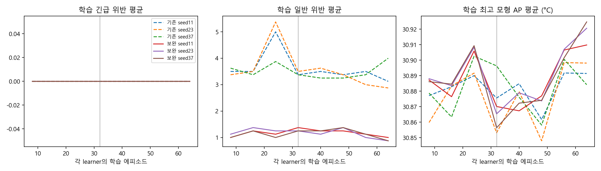
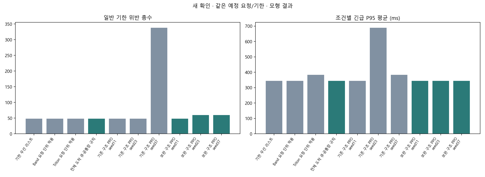
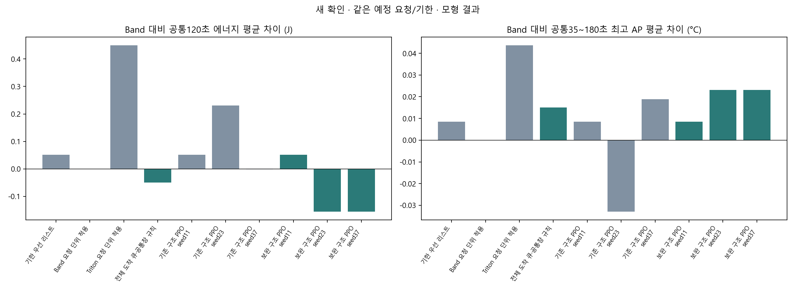
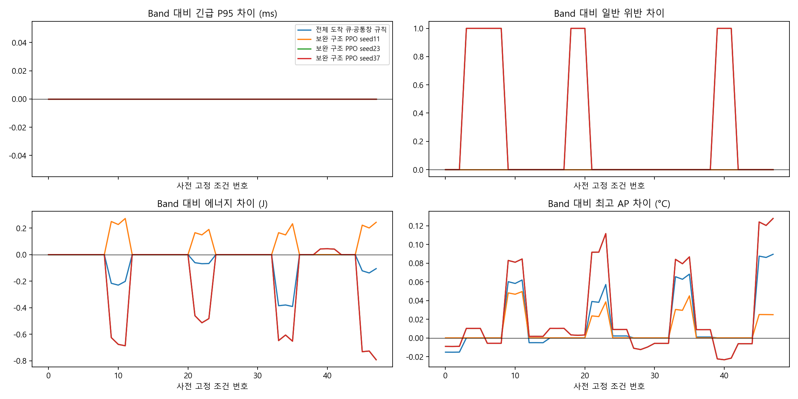
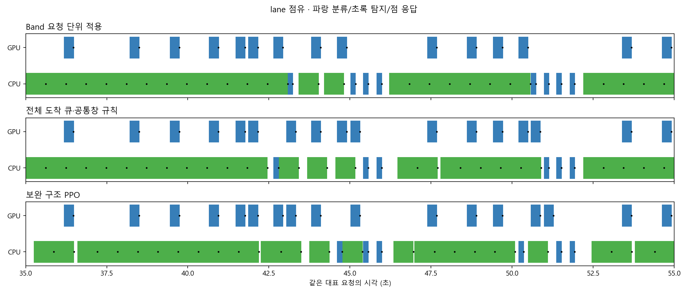
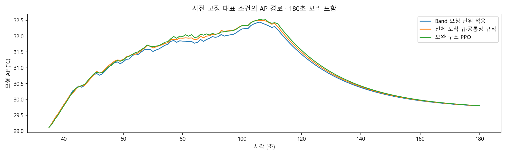

동일 CPU/GPU·요청·기한·동결 모형. 새 학습 404회, 환경 1404회, 기기 0회. AP는 표면 온도가 아니며 실제 제품 우위가 아니다.
최종 적격: 없음 · 기존 기준선 유지. 보상값 대신 완료·기한·P95·J·AP로 판정했다.
보고서와 재현 · 전체 CSV · 같은 후보에서 RL 추가 효과
| 구성 | 기존 PPO | 보완 규칙·PPO |
|---|---|---|
| 행동 | 원8 물리후보 | 같은8후보＋현재 큐 서비스/J 예측 제한 |
| 비용 예측 | 첫 atom의 서로 다른 짧은 창 | 도착 전체 큐의 고정 L0 후속＋AP180/J120 |
| 선택 | PPO · 동률L0 | 비학습 순위 / 같은 후보 PPO · exact동률 규칙 |
| 보상/계수 | 동일 L0 참조/AP 주보상·J와 서비스 비용·동결 계수 | |






필터
| 자료 | 정책 | 학습seed | 조건 | 부하 | 문맥 | 완료 | 일반위반 | 긴급 P95 ms | J120 | 최고 AP °C |
|---|---|---|---|---|---|---|---|---|---|---|
| 32회 개발 | 기한 우선 리스트 | 계산 불가 | 0 | 낮은 부하 | mean | 24 | 0 | 156.1799 | 142.1235 | 30.2014 |
| 32회 개발 | 기한 우선 리스트 | 계산 불가 | 1 | 낮은 부하 | short_context | 24 | 0 | 156.1799 | 142.1142 | 30.2005 |
| 32회 개발 | 기한 우선 리스트 | 계산 불가 | 2 | 낮은 부하 | long_context | 24 | 0 | 156.1799 | 142.1322 | 30.2023 |
| 32회 개발 | 기한 우선 리스트 | 계산 불가 | 3 | 큐 몰림 | mean | 24 | 2 | 294.0546 | 141.8640 | 30.4737 |
| 32회 개발 | 기한 우선 리스트 | 계산 불가 | 4 | 큐 몰림 | short_context | 24 | 2 | 286.6085 | 141.8466 | 30.4701 |
| 32회 개발 | 기한 우선 리스트 | 계산 불가 | 5 | 큐 몰림 | long_context | 24 | 2 | 301.5008 | 141.8809 | 30.4774 |
| 32회 개발 | 기한 우선 리스트 | 계산 불가 | 6 | 순간 몰림 | mean | 24 | 1 | 436.8501 | 141.8640 | 30.4737 |
| 32회 개발 | 기한 우선 리스트 | 계산 불가 | 7 | 순간 몰림 | short_context | 24 | 1 | 421.6805 | 141.8466 | 30.4701 |
| 32회 개발 | 기한 우선 리스트 | 계산 불가 | 8 | 순간 몰림 | long_context | 24 | 1 | 452.0196 | 141.8809 | 30.4774 |
| 32회 개발 | 기한 우선 리스트 | 계산 불가 | 9 | 지속 부하 | mean | 192 | 0 | 294.0546 | 183.4488 | 32.4070 |
| 32회 개발 | 기한 우선 리스트 | 계산 불가 | 10 | 지속 부하 | short_context | 192 | 0 | 286.6085 | 183.2712 | 32.3882 |
| 32회 개발 | 기한 우선 리스트 | 계산 불가 | 11 | 지속 부하 | long_context | 192 | 0 | 301.5008 | 183.6246 | 32.4256 |
| 32회 개발 | 기한 우선 리스트 | 계산 불가 | 12 | 낮은 부하 | mean | 24 | 0 | 156.1799 | 142.1235 | 30.1495 |
| 32회 개발 | 기한 우선 리스트 | 계산 불가 | 13 | 낮은 부하 | short_context | 24 | 0 | 156.1799 | 142.1142 | 30.1486 |
| 32회 개발 | 기한 우선 리스트 | 계산 불가 | 14 | 낮은 부하 | long_context | 24 | 0 | 156.1799 | 142.1322 | 30.1503 |
| 32회 개발 | 기한 우선 리스트 | 계산 불가 | 15 | 큐 몰림 | mean | 24 | 2 | 401.4848 | 141.8640 | 30.4783 |
| 32회 개발 | 기한 우선 리스트 | 계산 불가 | 16 | 큐 몰림 | short_context | 24 | 2 | 385.3579 | 141.8466 | 30.4746 |
| 32회 개발 | 기한 우선 리스트 | 계산 불가 | 17 | 큐 몰림 | long_context | 24 | 2 | 432.1011 | 141.8809 | 30.4821 |
| 32회 개발 | 기한 우선 리스트 | 계산 불가 | 18 | 순간 몰림 | mean | 24 | 1 | 515.4204 | 141.8640 | 30.4775 |
| 32회 개발 | 기한 우선 리스트 | 계산 불가 | 19 | 순간 몰림 | short_context | 24 | 1 | 500.2509 | 141.8466 | 30.4738 |
| 32회 개발 | 기한 우선 리스트 | 계산 불가 | 20 | 순간 몰림 | long_context | 24 | 1 | 530.5899 | 141.8809 | 30.4813 |
| 32회 개발 | 기한 우선 리스트 | 계산 불가 | 21 | 지속 부하 | mean | 192 | 0 | 294.0546 | 183.1778 | 32.2409 |
| 32회 개발 | 기한 우선 리스트 | 계산 불가 | 22 | 지속 부하 | short_context | 192 | 0 | 286.6085 | 183.0010 | 32.2251 |
| 32회 개발 | 기한 우선 리스트 | 계산 불가 | 23 | 지속 부하 | long_context | 192 | 0 | 301.5008 | 183.3528 | 32.2566 |
| 32회 개발 | Band 요청 단위 적용 | 계산 불가 | 0 | 낮은 부하 | mean | 24 | 0 | 156.1799 | 142.1235 | 30.2014 |
| 32회 개발 | Band 요청 단위 적용 | 계산 불가 | 1 | 낮은 부하 | short_context | 24 | 0 | 156.1799 | 142.1142 | 30.2005 |
| 32회 개발 | Band 요청 단위 적용 | 계산 불가 | 2 | 낮은 부하 | long_context | 24 | 0 | 156.1799 | 142.1322 | 30.2023 |
| 32회 개발 | Band 요청 단위 적용 | 계산 불가 | 3 | 큐 몰림 | mean | 24 | 2 | 294.0546 | 141.8640 | 30.4737 |
| 32회 개발 | Band 요청 단위 적용 | 계산 불가 | 4 | 큐 몰림 | short_context | 24 | 2 | 286.6085 | 141.8466 | 30.4701 |
| 32회 개발 | Band 요청 단위 적용 | 계산 불가 | 5 | 큐 몰림 | long_context | 24 | 2 | 301.5008 | 141.8809 | 30.4774 |
| 32회 개발 | Band 요청 단위 적용 | 계산 불가 | 6 | 순간 몰림 | mean | 24 | 1 | 436.8501 | 141.8640 | 30.4737 |
| 32회 개발 | Band 요청 단위 적용 | 계산 불가 | 7 | 순간 몰림 | short_context | 24 | 1 | 421.6805 | 141.8466 | 30.4701 |
| 32회 개발 | Band 요청 단위 적용 | 계산 불가 | 8 | 순간 몰림 | long_context | 24 | 1 | 452.0196 | 141.8809 | 30.4774 |
| 32회 개발 | Band 요청 단위 적용 | 계산 불가 | 9 | 지속 부하 | mean | 192 | 0 | 294.0546 | 183.2220 | 32.3749 |
| 32회 개발 | Band 요청 단위 적용 | 계산 불가 | 10 | 지속 부하 | short_context | 192 | 0 | 286.6085 | 183.0653 | 32.3572 |
| 32회 개발 | Band 요청 단위 적용 | 계산 불가 | 11 | 지속 부하 | long_context | 192 | 0 | 301.5008 | 183.3768 | 32.3925 |
| 32회 개발 | Band 요청 단위 적용 | 계산 불가 | 12 | 낮은 부하 | mean | 24 | 0 | 156.1799 | 142.1235 | 30.1495 |
| 32회 개발 | Band 요청 단위 적용 | 계산 불가 | 13 | 낮은 부하 | short_context | 24 | 0 | 156.1799 | 142.1142 | 30.1486 |
| 32회 개발 | Band 요청 단위 적용 | 계산 불가 | 14 | 낮은 부하 | long_context | 24 | 0 | 156.1799 | 142.1322 | 30.1503 |
| 32회 개발 | Band 요청 단위 적용 | 계산 불가 | 15 | 큐 몰림 | mean | 24 | 2 | 401.4848 | 141.8640 | 30.4783 |
| 32회 개발 | Band 요청 단위 적용 | 계산 불가 | 16 | 큐 몰림 | short_context | 24 | 2 | 385.3579 | 141.8466 | 30.4746 |
| 32회 개발 | Band 요청 단위 적용 | 계산 불가 | 17 | 큐 몰림 | long_context | 24 | 2 | 432.1011 | 141.8809 | 30.4821 |
| 32회 개발 | Band 요청 단위 적용 | 계산 불가 | 18 | 순간 몰림 | mean | 24 | 1 | 515.4204 | 141.8640 | 30.4775 |
| 32회 개발 | Band 요청 단위 적용 | 계산 불가 | 19 | 순간 몰림 | short_context | 24 | 1 | 500.2509 | 141.8466 | 30.4738 |
| 32회 개발 | Band 요청 단위 적용 | 계산 불가 | 20 | 순간 몰림 | long_context | 24 | 1 | 530.5899 | 141.8809 | 30.4813 |
| 32회 개발 | Band 요청 단위 적용 | 계산 불가 | 21 | 지속 부하 | mean | 192 | 0 | 294.0546 | 183.1107 | 32.2342 |
| 32회 개발 | Band 요청 단위 적용 | 계산 불가 | 22 | 지속 부하 | short_context | 192 | 0 | 286.6085 | 182.9403 | 32.2185 |
| 32회 개발 | Band 요청 단위 적용 | 계산 불가 | 23 | 지속 부하 | long_context | 192 | 0 | 301.5008 | 183.2791 | 32.2497 |
| 32회 개발 | Triton 요청 단위 적용 | 계산 불가 | 0 | 낮은 부하 | mean | 24 | 0 | 294.0546 | 142.4090 | 30.2391 |
| 32회 개발 | Triton 요청 단위 적용 | 계산 불가 | 1 | 낮은 부하 | short_context | 24 | 0 | 286.6085 | 142.3778 | 30.2371 |
| 32회 개발 | Triton 요청 단위 적용 | 계산 불가 | 2 | 낮은 부하 | long_context | 24 | 0 | 301.5008 | 142.4397 | 30.2410 |
| 32회 개발 | Triton 요청 단위 적용 | 계산 불가 | 3 | 큐 몰림 | mean | 24 | 2 | 294.0546 | 141.8640 | 30.4737 |
| 32회 개발 | Triton 요청 단위 적용 | 계산 불가 | 4 | 큐 몰림 | short_context | 24 | 2 | 286.6085 | 141.8466 | 30.4701 |
| 32회 개발 | Triton 요청 단위 적용 | 계산 불가 | 5 | 큐 몰림 | long_context | 24 | 2 | 301.5008 | 141.8809 | 30.4774 |
| 32회 개발 | Triton 요청 단위 적용 | 계산 불가 | 6 | 순간 몰림 | mean | 24 | 1 | 436.8501 | 141.8640 | 30.4737 |
| 32회 개발 | Triton 요청 단위 적용 | 계산 불가 | 7 | 순간 몰림 | short_context | 24 | 1 | 421.6805 | 141.8466 | 30.4701 |
| 32회 개발 | Triton 요청 단위 적용 | 계산 불가 | 8 | 순간 몰림 | long_context | 24 | 1 | 452.0196 | 141.8809 | 30.4774 |
| 32회 개발 | Triton 요청 단위 적용 | 계산 불가 | 9 | 지속 부하 | mean | 192 | 0 | 294.0546 | 184.8289 | 32.4939 |
| 32회 개발 | Triton 요청 단위 적용 | 계산 불가 | 10 | 지속 부하 | short_context | 192 | 0 | 286.6085 | 184.5455 | 32.4728 |
| 32회 개발 | Triton 요청 단위 적용 | 계산 불가 | 11 | 지속 부하 | long_context | 192 | 0 | 301.5008 | 185.1107 | 32.5148 |
| 32회 개발 | Triton 요청 단위 적용 | 계산 불가 | 12 | 낮은 부하 | mean | 24 | 0 | 294.0546 | 142.4090 | 30.2061 |
| 32회 개발 | Triton 요청 단위 적용 | 계산 불가 | 13 | 낮은 부하 | short_context | 24 | 0 | 286.6085 | 142.3778 | 30.2037 |
| 32회 개발 | Triton 요청 단위 적용 | 계산 불가 | 14 | 낮은 부하 | long_context | 24 | 0 | 301.5008 | 142.4397 | 30.2085 |
| 32회 개발 | Triton 요청 단위 적용 | 계산 불가 | 15 | 큐 몰림 | mean | 24 | 2 | 401.4848 | 141.8640 | 30.4783 |
| 32회 개발 | Triton 요청 단위 적용 | 계산 불가 | 16 | 큐 몰림 | short_context | 24 | 2 | 385.3579 | 141.8466 | 30.4746 |
| 32회 개발 | Triton 요청 단위 적용 | 계산 불가 | 17 | 큐 몰림 | long_context | 24 | 2 | 432.1011 | 141.8809 | 30.4821 |
| 32회 개발 | Triton 요청 단위 적용 | 계산 불가 | 18 | 순간 몰림 | mean | 24 | 1 | 515.4204 | 141.8640 | 30.4775 |
| 32회 개발 | Triton 요청 단위 적용 | 계산 불가 | 19 | 순간 몰림 | short_context | 24 | 1 | 500.2509 | 141.8466 | 30.4738 |
| 32회 개발 | Triton 요청 단위 적용 | 계산 불가 | 20 | 순간 몰림 | long_context | 24 | 1 | 530.5899 | 141.8809 | 30.4813 |
| 32회 개발 | Triton 요청 단위 적용 | 계산 불가 | 21 | 지속 부하 | mean | 192 | 0 | 294.0546 | 184.6532 | 32.3621 |
| 32회 개발 | Triton 요청 단위 적용 | 계산 불가 | 22 | 지속 부하 | short_context | 192 | 0 | 286.6085 | 184.3631 | 32.3429 |
| 32회 개발 | Triton 요청 단위 적용 | 계산 불가 | 23 | 지속 부하 | long_context | 192 | 0 | 301.5008 | 184.9413 | 32.3812 |
| 32회 개발 | 전체 도착 큐·공통창 규칙 | 계산 불가 | 0 | 낮은 부하 | mean | 24 | 0 | 156.1799 | 142.1235 | 30.1920 |
| 32회 개발 | 전체 도착 큐·공통창 규칙 | 계산 불가 | 1 | 낮은 부하 | short_context | 24 | 0 | 156.1799 | 142.1142 | 30.1912 |
| 32회 개발 | 전체 도착 큐·공통창 규칙 | 계산 불가 | 2 | 낮은 부하 | long_context | 24 | 0 | 156.1799 | 142.1322 | 30.1928 |
| 32회 개발 | 전체 도착 큐·공통창 규칙 | 계산 불가 | 3 | 큐 몰림 | mean | 24 | 2 | 294.0546 | 141.8640 | 30.4737 |
| 32회 개발 | 전체 도착 큐·공통창 규칙 | 계산 불가 | 4 | 큐 몰림 | short_context | 24 | 2 | 286.6085 | 141.8466 | 30.4701 |
| 32회 개발 | 전체 도착 큐·공통창 규칙 | 계산 불가 | 5 | 큐 몰림 | long_context | 24 | 2 | 301.5008 | 141.8809 | 30.4774 |
| 32회 개발 | 전체 도착 큐·공통창 규칙 | 계산 불가 | 6 | 순간 몰림 | mean | 24 | 1 | 436.8501 | 141.8640 | 30.4737 |
| 32회 개발 | 전체 도착 큐·공통창 규칙 | 계산 불가 | 7 | 순간 몰림 | short_context | 24 | 1 | 421.6805 | 141.8466 | 30.4701 |
| 32회 개발 | 전체 도착 큐·공통창 규칙 | 계산 불가 | 8 | 순간 몰림 | long_context | 24 | 1 | 452.0196 | 141.8809 | 30.4774 |
| 32회 개발 | 전체 도착 큐·공통창 규칙 | 계산 불가 | 9 | 지속 부하 | mean | 192 | 0 | 294.0546 | 183.2070 | 32.4324 |
| 32회 개발 | 전체 도착 큐·공통창 규칙 | 계산 불가 | 10 | 지속 부하 | short_context | 192 | 0 | 286.6085 | 183.0616 | 32.4102 |
| 32회 개발 | 전체 도착 큐·공통창 규칙 | 계산 불가 | 11 | 지속 부하 | long_context | 192 | 0 | 301.5008 | 183.3833 | 32.4511 |
| 32회 개발 | 전체 도착 큐·공통창 규칙 | 계산 불가 | 12 | 낮은 부하 | mean | 24 | 0 | 156.1799 | 142.1235 | 30.1517 |
| 32회 개발 | 전체 도착 큐·공통창 규칙 | 계산 불가 | 13 | 낮은 부하 | short_context | 24 | 0 | 156.1799 | 142.1142 | 30.1508 |
| 32회 개발 | 전체 도착 큐·공통창 규칙 | 계산 불가 | 14 | 낮은 부하 | long_context | 24 | 0 | 156.1799 | 142.1322 | 30.1525 |
| 32회 개발 | 전체 도착 큐·공통창 규칙 | 계산 불가 | 15 | 큐 몰림 | mean | 24 | 2 | 401.4848 | 141.8640 | 30.4783 |
| 32회 개발 | 전체 도착 큐·공통창 규칙 | 계산 불가 | 16 | 큐 몰림 | short_context | 24 | 2 | 385.3579 | 141.8466 | 30.4746 |
| 32회 개발 | 전체 도착 큐·공통창 규칙 | 계산 불가 | 17 | 큐 몰림 | long_context | 24 | 2 | 432.1011 | 141.8809 | 30.4821 |
| 32회 개발 | 전체 도착 큐·공통창 규칙 | 계산 불가 | 18 | 순간 몰림 | mean | 24 | 1 | 515.4204 | 141.8640 | 30.4775 |
| 32회 개발 | 전체 도착 큐·공통창 규칙 | 계산 불가 | 19 | 순간 몰림 | short_context | 24 | 1 | 500.2509 | 141.8466 | 30.4738 |
| 32회 개발 | 전체 도착 큐·공통창 규칙 | 계산 불가 | 20 | 순간 몰림 | long_context | 24 | 1 | 530.5899 | 141.8809 | 30.4813 |
| 32회 개발 | 전체 도착 큐·공통창 규칙 | 계산 불가 | 21 | 지속 부하 | mean | 192 | 0 | 294.0546 | 183.1746 | 32.2580 |
| 32회 개발 | 전체 도착 큐·공통창 규칙 | 계산 불가 | 22 | 지속 부하 | short_context | 192 | 0 | 286.6085 | 182.9969 | 32.2418 |
| 32회 개발 | 전체 도착 큐·공통창 규칙 | 계산 불가 | 23 | 지속 부하 | long_context | 192 | 0 | 301.5008 | 183.3505 | 32.2741 |
| 32회 개발 | 기존 구조 PPO | seed11 | 0 | 낮은 부하 | mean | 24 | 0 | 406.1799 | 142.1235 | 30.1980 |
| 32회 개발 | 기존 구조 PPO | seed11 | 1 | 낮은 부하 | short_context | 24 | 0 | 406.1799 | 142.1142 | 30.1971 |
| 32회 개발 | 기존 구조 PPO | seed11 | 2 | 낮은 부하 | long_context | 24 | 0 | 406.1799 | 142.1322 | 30.1988 |
| 32회 개발 | 기존 구조 PPO | seed11 | 3 | 큐 몰림 | mean | 24 | 7 | 773.5773 | 141.8640 | 30.4416 |
| 32회 개발 | 기존 구조 PPO | seed11 | 4 | 큐 몰림 | short_context | 24 | 7 | 765.4080 | 141.8466 | 30.4379 |
| 32회 개발 | 기존 구조 PPO | seed11 | 5 | 큐 몰림 | long_context | 24 | 7 | 781.7081 | 141.8809 | 30.4453 |
| 32회 개발 | 기존 구조 PPO | seed11 | 6 | 순간 몰림 | mean | 24 | 7 | 1019.5765 | 141.9092 | 30.4316 |
| 32회 개발 | 기존 구조 PPO | seed11 | 7 | 순간 몰림 | short_context | 24 | 7 | 1009.9610 | 141.8905 | 30.4271 |
| 32회 개발 | 기존 구조 PPO | seed11 | 8 | 순간 몰림 | long_context | 24 | 7 | 1029.0766 | 141.9273 | 30.4361 |
| 32회 개발 | 기존 구조 PPO | seed11 | 9 | 지속 부하 | mean | 192 | 0 | 1722.0915 | 182.7576 | 32.5801 |
| 32회 개발 | 기존 구조 PPO | seed11 | 10 | 지속 부하 | short_context | 192 | 0 | 1606.3854 | 182.4719 | 32.5229 |
| 32회 개발 | 기존 구조 PPO | seed11 | 11 | 지속 부하 | long_context | 192 | 0 | 1753.2002 | 183.0516 | 32.6036 |
| 32회 개발 | 기존 구조 PPO | seed11 | 12 | 낮은 부하 | mean | 24 | 0 | 406.1799 | 142.1235 | 30.1579 |
| 32회 개발 | 기존 구조 PPO | seed11 | 13 | 낮은 부하 | short_context | 24 | 0 | 406.1799 | 142.1142 | 30.1570 |
| 32회 개발 | 기존 구조 PPO | seed11 | 14 | 낮은 부하 | long_context | 24 | 0 | 406.1799 | 142.1322 | 30.1587 |
| 32회 개발 | 기존 구조 PPO | seed11 | 15 | 큐 몰림 | mean | 24 | 7 | 1650.3259 | 141.9150 | 30.4712 |
| 32회 개발 | 기존 구조 PPO | seed11 | 16 | 큐 몰림 | short_context | 24 | 7 | 1637.8179 | 141.8960 | 30.4663 |
| 32회 개발 | 기존 구조 PPO | seed11 | 17 | 큐 몰림 | long_context | 24 | 7 | 1662.5646 | 141.9336 | 30.4759 |
| 32회 개발 | 기존 구조 PPO | seed11 | 18 | 순간 몰림 | mean | 24 | 7 | 1082.3278 | 141.8640 | 30.4738 |
| 32회 개발 | 기존 구조 PPO | seed11 | 19 | 순간 몰림 | short_context | 24 | 7 | 1074.1586 | 141.8466 | 30.4699 |
| 32회 개발 | 기존 구조 PPO | seed11 | 20 | 순간 몰림 | long_context | 24 | 7 | 1090.4586 | 141.8809 | 30.4773 |
| 32회 개발 | 기존 구조 PPO | seed11 | 21 | 지속 부하 | mean | 192 | 0 | 1647.4419 | 182.9865 | 32.5118 |
| 32회 개발 | 기존 구조 PPO | seed11 | 22 | 지속 부하 | short_context | 192 | 0 | 1636.3801 | 182.7757 | 32.4887 |
| 32회 개발 | 기존 구조 PPO | seed11 | 23 | 지속 부하 | long_context | 192 | 0 | 1658.3113 | 183.1928 | 32.5352 |
| 32회 개발 | 기존 구조 PPO | seed23 | 0 | 낮은 부하 | mean | 24 | 0 | 156.1799 | 142.1235 | 30.2014 |
| 32회 개발 | 기존 구조 PPO | seed23 | 1 | 낮은 부하 | short_context | 24 | 0 | 156.1799 | 142.1142 | 30.2005 |
| 32회 개발 | 기존 구조 PPO | seed23 | 2 | 낮은 부하 | long_context | 24 | 0 | 156.1799 | 142.1322 | 30.2023 |
| 32회 개발 | 기존 구조 PPO | seed23 | 3 | 큐 몰림 | mean | 24 | 2 | 544.0546 | 141.8640 | 30.4745 |
| 32회 개발 | 기존 구조 PPO | seed23 | 4 | 큐 몰림 | short_context | 24 | 2 | 536.6085 | 141.8466 | 30.4708 |
| 32회 개발 | 기존 구조 PPO | seed23 | 5 | 큐 몰림 | long_context | 24 | 2 | 551.5008 | 141.8809 | 30.4781 |
| 32회 개발 | 기존 구조 PPO | seed23 | 6 | 순간 몰림 | mean | 24 | 1 | 769.2349 | 141.8640 | 30.4748 |
| 32회 개발 | 기존 구조 PPO | seed23 | 7 | 순간 몰림 | short_context | 24 | 1 | 759.8529 | 141.8466 | 30.4709 |
| 32회 개발 | 기존 구조 PPO | seed23 | 8 | 순간 몰림 | long_context | 24 | 1 | 784.4045 | 141.8809 | 30.4785 |
| 32회 개발 | 기존 구조 PPO | seed23 | 9 | 지속 부하 | mean | 192 | 0 | 703.4220 | 183.8457 | 32.2296 |
| 32회 개발 | 기존 구조 PPO | seed23 | 10 | 지속 부하 | short_context | 192 | 0 | 694.2697 | 183.7294 | 32.2156 |
| 32회 개발 | 기존 구조 PPO | seed23 | 11 | 지속 부하 | long_context | 192 | 0 | 717.7925 | 183.9772 | 32.2262 |
| 32회 개발 | 기존 구조 PPO | seed23 | 12 | 낮은 부하 | mean | 24 | 0 | 156.1799 | 142.1235 | 30.1495 |
| 32회 개발 | 기존 구조 PPO | seed23 | 13 | 낮은 부하 | short_context | 24 | 0 | 156.1799 | 142.1142 | 30.1486 |
| 32회 개발 | 기존 구조 PPO | seed23 | 14 | 낮은 부하 | long_context | 24 | 0 | 156.1799 | 142.1322 | 30.1503 |
| 32회 개발 | 기존 구조 PPO | seed23 | 15 | 큐 몰림 | mean | 24 | 2 | 705.9597 | 141.8640 | 30.4790 |
| 32회 개발 | 기존 구조 PPO | seed23 | 16 | 큐 몰림 | short_context | 24 | 2 | 698.5136 | 141.8466 | 30.4753 |
| 32회 개발 | 기존 구조 PPO | seed23 | 17 | 큐 몰림 | long_context | 24 | 2 | 713.4059 | 141.8809 | 30.4828 |
| 32회 개발 | 기존 구조 PPO | seed23 | 18 | 순간 몰림 | mean | 24 | 1 | 1006.2957 | 141.8640 | 30.4787 |
| 32회 개발 | 기존 구조 PPO | seed23 | 19 | 순간 몰림 | short_context | 24 | 1 | 756.5850 | 141.8466 | 30.4745 |
| 32회 개발 | 기존 구조 PPO | seed23 | 20 | 순간 몰림 | long_context | 24 | 1 | 1014.4265 | 141.8809 | 30.4825 |
| 32회 개발 | 기존 구조 PPO | seed23 | 21 | 지속 부하 | mean | 192 | 0 | 686.9749 | 183.8947 | 32.1003 |
| 32회 개발 | 기존 구조 PPO | seed23 | 22 | 지속 부하 | short_context | 192 | 0 | 679.5287 | 183.7806 | 32.0838 |
| 32회 개발 | 기존 구조 PPO | seed23 | 23 | 지속 부하 | long_context | 192 | 0 | 694.4210 | 184.0052 | 32.1164 |
| 32회 개발 | 기존 구조 PPO | seed37 | 0 | 낮은 부하 | mean | 24 | 0 | 294.0546 | 142.4090 | 30.2356 |
| 32회 개발 | 기존 구조 PPO | seed37 | 1 | 낮은 부하 | short_context | 24 | 0 | 286.6085 | 142.3778 | 30.2337 |
| 32회 개발 | 기존 구조 PPO | seed37 | 2 | 낮은 부하 | long_context | 24 | 0 | 301.5008 | 142.4397 | 30.2375 |
| 32회 개발 | 기존 구조 PPO | seed37 | 3 | 큐 몰림 | mean | 24 | 9 | 294.0546 | 142.1716 | 30.4375 |
| 32회 개발 | 기존 구조 PPO | seed37 | 4 | 큐 몰림 | short_context | 24 | 9 | 286.6085 | 142.1501 | 30.4346 |
| 32회 개발 | 기존 구조 PPO | seed37 | 5 | 큐 몰림 | long_context | 24 | 9 | 301.5008 | 142.1927 | 30.4403 |
| 32회 개발 | 기존 구조 PPO | seed37 | 6 | 순간 몰림 | mean | 24 | 10 | 436.8501 | 142.0809 | 30.4326 |
| 32회 개발 | 기존 구조 PPO | seed37 | 7 | 순간 몰림 | short_context | 24 | 10 | 421.6805 | 142.0635 | 30.4288 |
| 32회 개발 | 기존 구조 PPO | seed37 | 8 | 순간 몰림 | long_context | 24 | 10 | 452.0196 | 142.0977 | 30.4364 |
| 32회 개발 | 기존 구조 PPO | seed37 | 9 | 지속 부하 | mean | 192 | 50 | 294.0546 | 183.5664 | 32.6522 |
| 32회 개발 | 기존 구조 PPO | seed37 | 10 | 지속 부하 | short_context | 192 | 50 | 286.6085 | 183.2644 | 32.6259 |
| 32회 개발 | 기존 구조 PPO | seed37 | 11 | 지속 부하 | long_context | 192 | 50 | 301.5008 | 183.7806 | 32.6786 |
| 32회 개발 | 기존 구조 PPO | seed37 | 12 | 낮은 부하 | mean | 24 | 0 | 294.0546 | 142.4090 | 30.2145 |
| 32회 개발 | 기존 구조 PPO | seed37 | 13 | 낮은 부하 | short_context | 24 | 0 | 286.6085 | 142.3778 | 30.2120 |
| 32회 개발 | 기존 구조 PPO | seed37 | 14 | 낮은 부하 | long_context | 24 | 0 | 301.5008 | 142.4397 | 30.2169 |
| 32회 개발 | 기존 구조 PPO | seed37 | 15 | 큐 몰림 | mean | 24 | 10 | 401.4848 | 142.0874 | 30.4462 |
| 32회 개발 | 기존 구조 PPO | seed37 | 16 | 큐 몰림 | short_context | 24 | 10 | 385.3579 | 142.0640 | 30.4423 |
| 32회 개발 | 기존 구조 PPO | seed37 | 17 | 큐 몰림 | long_context | 24 | 10 | 432.1011 | 142.1060 | 30.4506 |
| 32회 개발 | 기존 구조 PPO | seed37 | 18 | 순간 몰림 | mean | 24 | 10 | 515.4204 | 142.0366 | 30.4536 |
| 32회 개발 | 기존 구조 PPO | seed37 | 19 | 순간 몰림 | short_context | 24 | 10 | 500.2509 | 142.0155 | 30.4494 |
| 32회 개발 | 기존 구조 PPO | seed37 | 20 | 순간 몰림 | long_context | 24 | 10 | 530.5899 | 142.0573 | 30.4578 |
| 32회 개발 | 기존 구조 PPO | seed37 | 21 | 지속 부하 | mean | 192 | 34 | 294.0546 | 183.7474 | 32.4170 |
| 32회 개발 | 기존 구조 PPO | seed37 | 22 | 지속 부하 | short_context | 192 | 34 | 286.6085 | 183.5216 | 32.3914 |
| 32회 개발 | 기존 구조 PPO | seed37 | 23 | 지속 부하 | long_context | 192 | 34 | 301.5008 | 183.9555 | 32.4437 |
| 32회 개발 | 보완 구조 PPO | seed11 | 0 | 낮은 부하 | mean | 24 | 0 | 156.1799 | 142.1235 | 30.1980 |
| 32회 개발 | 보완 구조 PPO | seed11 | 1 | 낮은 부하 | short_context | 24 | 0 | 156.1799 | 142.1142 | 30.1971 |
| 32회 개발 | 보완 구조 PPO | seed11 | 2 | 낮은 부하 | long_context | 24 | 0 | 156.1799 | 142.1322 | 30.1988 |
| 32회 개발 | 보완 구조 PPO | seed11 | 3 | 큐 몰림 | mean | 24 | 4 | 294.0546 | 141.9072 | 30.4512 |
| 32회 개발 | 보완 구조 PPO | seed11 | 4 | 큐 몰림 | short_context | 24 | 4 | 286.6085 | 141.8912 | 30.4467 |
| 32회 개발 | 보완 구조 PPO | seed11 | 5 | 큐 몰림 | long_context | 24 | 4 | 301.5008 | 141.9228 | 30.4557 |
| 32회 개발 | 보완 구조 PPO | seed11 | 6 | 순간 몰림 | mean | 24 | 1 | 436.8501 | 141.8640 | 30.4676 |
| 32회 개발 | 보완 구조 PPO | seed11 | 7 | 순간 몰림 | short_context | 24 | 1 | 421.6805 | 141.8466 | 30.4640 |
| 32회 개발 | 보완 구조 PPO | seed11 | 8 | 순간 몰림 | long_context | 24 | 1 | 452.0196 | 141.8809 | 30.4713 |
| 32회 개발 | 보완 구조 PPO | seed11 | 9 | 지속 부하 | mean | 192 | 0 | 294.0546 | 182.7913 | 32.5072 |
| 32회 개발 | 보완 구조 PPO | seed11 | 10 | 지속 부하 | short_context | 192 | 0 | 286.6085 | 182.6197 | 32.4871 |
| 32회 개발 | 보완 구조 PPO | seed11 | 11 | 지속 부하 | long_context | 192 | 0 | 301.5008 | 182.9607 | 32.5272 |
| 32회 개발 | 보완 구조 PPO | seed11 | 12 | 낮은 부하 | mean | 24 | 0 | 156.1799 | 142.1235 | 30.1578 |
| 32회 개발 | 보완 구조 PPO | seed11 | 13 | 낮은 부하 | short_context | 24 | 0 | 156.1799 | 142.1142 | 30.1569 |
| 32회 개발 | 보완 구조 PPO | seed11 | 14 | 낮은 부하 | long_context | 24 | 0 | 156.1799 | 142.1322 | 30.1586 |
| 32회 개발 | 보완 구조 PPO | seed11 | 15 | 큐 몰림 | mean | 24 | 2 | 401.4848 | 141.8640 | 30.4670 |
| 32회 개발 | 보완 구조 PPO | seed11 | 16 | 큐 몰림 | short_context | 24 | 2 | 385.3579 | 141.8466 | 30.4619 |
| 32회 개발 | 보완 구조 PPO | seed11 | 17 | 큐 몰림 | long_context | 24 | 2 | 432.1011 | 141.8809 | 30.4722 |
| 32회 개발 | 보완 구조 PPO | seed11 | 18 | 순간 몰림 | mean | 24 | 2 | 440.4562 | 141.9505 | 30.4369 |
| 32회 개발 | 보완 구조 PPO | seed11 | 19 | 순간 몰림 | short_context | 24 | 2 | 425.2867 | 141.9358 | 30.4328 |
| 32회 개발 | 보완 구조 PPO | seed11 | 20 | 순간 몰림 | long_context | 24 | 2 | 455.6257 | 141.9647 | 30.4409 |
| 32회 개발 | 보완 구조 PPO | seed11 | 21 | 지속 부하 | mean | 192 | 0 | 294.0546 | 182.6889 | 32.3466 |
| 32회 개발 | 보완 구조 PPO | seed11 | 22 | 지속 부하 | short_context | 192 | 0 | 286.6085 | 182.5096 | 32.3265 |
| 32회 개발 | 보완 구조 PPO | seed11 | 23 | 지속 부하 | long_context | 192 | 0 | 301.5008 | 182.8662 | 32.3666 |
| 32회 개발 | 보완 구조 PPO | seed23 | 0 | 낮은 부하 | mean | 24 | 0 | 156.1799 | 142.1235 | 30.1980 |
| 32회 개발 | 보완 구조 PPO | seed23 | 1 | 낮은 부하 | short_context | 24 | 0 | 156.1799 | 142.1142 | 30.1971 |
| 32회 개발 | 보완 구조 PPO | seed23 | 2 | 낮은 부하 | long_context | 24 | 0 | 156.1799 | 142.1322 | 30.1988 |
| 32회 개발 | 보완 구조 PPO | seed23 | 3 | 큐 몰림 | mean | 24 | 4 | 294.0546 | 141.9072 | 30.4512 |
| 32회 개발 | 보완 구조 PPO | seed23 | 4 | 큐 몰림 | short_context | 24 | 4 | 286.6085 | 141.8912 | 30.4467 |
| 32회 개발 | 보완 구조 PPO | seed23 | 5 | 큐 몰림 | long_context | 24 | 4 | 301.5008 | 141.9228 | 30.4557 |
| 32회 개발 | 보완 구조 PPO | seed23 | 6 | 순간 몰림 | mean | 24 | 1 | 436.8501 | 141.8640 | 30.4676 |
| 32회 개발 | 보완 구조 PPO | seed23 | 7 | 순간 몰림 | short_context | 24 | 1 | 421.6805 | 141.8466 | 30.4640 |
| 32회 개발 | 보완 구조 PPO | seed23 | 8 | 순간 몰림 | long_context | 24 | 1 | 452.0196 | 141.8809 | 30.4713 |
| 32회 개발 | 보완 구조 PPO | seed23 | 9 | 지속 부하 | mean | 192 | 0 | 294.0546 | 182.7978 | 32.5135 |
| 32회 개발 | 보완 구조 PPO | seed23 | 10 | 지속 부하 | short_context | 192 | 0 | 286.6085 | 182.6197 | 32.4871 |
| 32회 개발 | 보완 구조 PPO | seed23 | 11 | 지속 부하 | long_context | 192 | 0 | 301.5008 | 182.9607 | 32.5272 |
| 32회 개발 | 보완 구조 PPO | seed23 | 12 | 낮은 부하 | mean | 24 | 0 | 156.1799 | 142.1235 | 30.1578 |
| 32회 개발 | 보완 구조 PPO | seed23 | 13 | 낮은 부하 | short_context | 24 | 0 | 156.1799 | 142.1142 | 30.1569 |
| 32회 개발 | 보완 구조 PPO | seed23 | 14 | 낮은 부하 | long_context | 24 | 0 | 156.1799 | 142.1322 | 30.1586 |
| 32회 개발 | 보완 구조 PPO | seed23 | 15 | 큐 몰림 | mean | 24 | 2 | 401.4848 | 141.8640 | 30.4670 |
| 32회 개발 | 보완 구조 PPO | seed23 | 16 | 큐 몰림 | short_context | 24 | 2 | 385.3579 | 141.8466 | 30.4619 |
| 32회 개발 | 보완 구조 PPO | seed23 | 17 | 큐 몰림 | long_context | 24 | 2 | 432.1011 | 141.8809 | 30.4722 |
| 32회 개발 | 보완 구조 PPO | seed23 | 18 | 순간 몰림 | mean | 24 | 2 | 440.4562 | 141.9505 | 30.4369 |
| 32회 개발 | 보완 구조 PPO | seed23 | 19 | 순간 몰림 | short_context | 24 | 2 | 425.2867 | 141.9358 | 30.4328 |
| 32회 개발 | 보완 구조 PPO | seed23 | 20 | 순간 몰림 | long_context | 24 | 2 | 455.6257 | 141.9647 | 30.4409 |
| 32회 개발 | 보완 구조 PPO | seed23 | 21 | 지속 부하 | mean | 192 | 0 | 294.0546 | 182.6640 | 32.3369 |
| 32회 개발 | 보완 구조 PPO | seed23 | 22 | 지속 부하 | short_context | 192 | 0 | 286.6085 | 182.5096 | 32.3265 |
| 32회 개발 | 보완 구조 PPO | seed23 | 23 | 지속 부하 | long_context | 192 | 0 | 301.5008 | 182.8662 | 32.3666 |
| 32회 개발 | 보완 구조 PPO | seed37 | 0 | 낮은 부하 | mean | 24 | 0 | 156.1799 | 142.1235 | 30.1980 |
| 32회 개발 | 보완 구조 PPO | seed37 | 1 | 낮은 부하 | short_context | 24 | 0 | 156.1799 | 142.1142 | 30.1971 |
| 32회 개발 | 보완 구조 PPO | seed37 | 2 | 낮은 부하 | long_context | 24 | 0 | 156.1799 | 142.1322 | 30.1988 |
| 32회 개발 | 보완 구조 PPO | seed37 | 3 | 큐 몰림 | mean | 24 | 4 | 294.0546 | 141.9072 | 30.4512 |
| 32회 개발 | 보완 구조 PPO | seed37 | 4 | 큐 몰림 | short_context | 24 | 4 | 286.6085 | 141.8912 | 30.4467 |
| 32회 개발 | 보완 구조 PPO | seed37 | 5 | 큐 몰림 | long_context | 24 | 4 | 301.5008 | 141.9228 | 30.4557 |
| 32회 개발 | 보완 구조 PPO | seed37 | 6 | 순간 몰림 | mean | 24 | 1 | 436.8501 | 141.8640 | 30.4676 |
| 32회 개발 | 보완 구조 PPO | seed37 | 7 | 순간 몰림 | short_context | 24 | 1 | 421.6805 | 141.8466 | 30.4640 |
| 32회 개발 | 보완 구조 PPO | seed37 | 8 | 순간 몰림 | long_context | 24 | 1 | 452.0196 | 141.8809 | 30.4713 |
| 32회 개발 | 보완 구조 PPO | seed37 | 9 | 지속 부하 | mean | 192 | 0 | 294.0546 | 182.7978 | 32.5135 |
| 32회 개발 | 보완 구조 PPO | seed37 | 10 | 지속 부하 | short_context | 192 | 0 | 286.6085 | 182.6197 | 32.4871 |
| 32회 개발 | 보완 구조 PPO | seed37 | 11 | 지속 부하 | long_context | 192 | 0 | 301.5008 | 182.9607 | 32.5272 |
| 32회 개발 | 보완 구조 PPO | seed37 | 12 | 낮은 부하 | mean | 24 | 0 | 156.1799 | 142.1235 | 30.1578 |
| 32회 개발 | 보완 구조 PPO | seed37 | 13 | 낮은 부하 | short_context | 24 | 0 | 156.1799 | 142.1142 | 30.1569 |
| 32회 개발 | 보완 구조 PPO | seed37 | 14 | 낮은 부하 | long_context | 24 | 0 | 156.1799 | 142.1322 | 30.1586 |
| 32회 개발 | 보완 구조 PPO | seed37 | 15 | 큐 몰림 | mean | 24 | 2 | 401.4848 | 141.8640 | 30.4670 |
| 32회 개발 | 보완 구조 PPO | seed37 | 16 | 큐 몰림 | short_context | 24 | 2 | 385.3579 | 141.8466 | 30.4619 |
| 32회 개발 | 보완 구조 PPO | seed37 | 17 | 큐 몰림 | long_context | 24 | 2 | 432.1011 | 141.8809 | 30.4722 |
| 32회 개발 | 보완 구조 PPO | seed37 | 18 | 순간 몰림 | mean | 24 | 2 | 440.4562 | 141.9505 | 30.4369 |
| 32회 개발 | 보완 구조 PPO | seed37 | 19 | 순간 몰림 | short_context | 24 | 2 | 425.2867 | 141.9358 | 30.4328 |
| 32회 개발 | 보완 구조 PPO | seed37 | 20 | 순간 몰림 | long_context | 24 | 2 | 455.6257 | 141.9647 | 30.4409 |
| 32회 개발 | 보완 구조 PPO | seed37 | 21 | 지속 부하 | mean | 192 | 0 | 294.0546 | 182.6640 | 32.3369 |
| 32회 개발 | 보완 구조 PPO | seed37 | 22 | 지속 부하 | short_context | 192 | 0 | 286.6085 | 182.5096 | 32.3265 |
| 32회 개발 | 보완 구조 PPO | seed37 | 23 | 지속 부하 | long_context | 192 | 0 | 301.5008 | 182.8662 | 32.3666 |
| 64회 개발 | 기한 우선 리스트 | 계산 불가 | 0 | 낮은 부하 | mean | 24 | 0 | 156.1799 | 142.1235 | 30.2014 |
| 64회 개발 | 기한 우선 리스트 | 계산 불가 | 1 | 낮은 부하 | short_context | 24 | 0 | 156.1799 | 142.1142 | 30.2005 |
| 64회 개발 | 기한 우선 리스트 | 계산 불가 | 2 | 낮은 부하 | long_context | 24 | 0 | 156.1799 | 142.1322 | 30.2023 |
| 64회 개발 | 기한 우선 리스트 | 계산 불가 | 3 | 큐 몰림 | mean | 24 | 2 | 294.0546 | 141.8640 | 30.4737 |
| 64회 개발 | 기한 우선 리스트 | 계산 불가 | 4 | 큐 몰림 | short_context | 24 | 2 | 286.6085 | 141.8466 | 30.4701 |
| 64회 개발 | 기한 우선 리스트 | 계산 불가 | 5 | 큐 몰림 | long_context | 24 | 2 | 301.5008 | 141.8809 | 30.4774 |
| 64회 개발 | 기한 우선 리스트 | 계산 불가 | 6 | 순간 몰림 | mean | 24 | 1 | 436.8501 | 141.8640 | 30.4737 |
| 64회 개발 | 기한 우선 리스트 | 계산 불가 | 7 | 순간 몰림 | short_context | 24 | 1 | 421.6805 | 141.8466 | 30.4701 |
| 64회 개발 | 기한 우선 리스트 | 계산 불가 | 8 | 순간 몰림 | long_context | 24 | 1 | 452.0196 | 141.8809 | 30.4774 |
| 64회 개발 | 기한 우선 리스트 | 계산 불가 | 9 | 지속 부하 | mean | 192 | 0 | 294.0546 | 183.4488 | 32.4070 |
| 64회 개발 | 기한 우선 리스트 | 계산 불가 | 10 | 지속 부하 | short_context | 192 | 0 | 286.6085 | 183.2712 | 32.3882 |
| 64회 개발 | 기한 우선 리스트 | 계산 불가 | 11 | 지속 부하 | long_context | 192 | 0 | 301.5008 | 183.6246 | 32.4256 |
| 64회 개발 | 기한 우선 리스트 | 계산 불가 | 12 | 낮은 부하 | mean | 24 | 0 | 156.1799 | 142.1235 | 30.1495 |
| 64회 개발 | 기한 우선 리스트 | 계산 불가 | 13 | 낮은 부하 | short_context | 24 | 0 | 156.1799 | 142.1142 | 30.1486 |
| 64회 개발 | 기한 우선 리스트 | 계산 불가 | 14 | 낮은 부하 | long_context | 24 | 0 | 156.1799 | 142.1322 | 30.1503 |
| 64회 개발 | 기한 우선 리스트 | 계산 불가 | 15 | 큐 몰림 | mean | 24 | 2 | 401.4848 | 141.8640 | 30.4783 |
| 64회 개발 | 기한 우선 리스트 | 계산 불가 | 16 | 큐 몰림 | short_context | 24 | 2 | 385.3579 | 141.8466 | 30.4746 |
| 64회 개발 | 기한 우선 리스트 | 계산 불가 | 17 | 큐 몰림 | long_context | 24 | 2 | 432.1011 | 141.8809 | 30.4821 |
| 64회 개발 | 기한 우선 리스트 | 계산 불가 | 18 | 순간 몰림 | mean | 24 | 1 | 515.4204 | 141.8640 | 30.4775 |
| 64회 개발 | 기한 우선 리스트 | 계산 불가 | 19 | 순간 몰림 | short_context | 24 | 1 | 500.2509 | 141.8466 | 30.4738 |
| 64회 개발 | 기한 우선 리스트 | 계산 불가 | 20 | 순간 몰림 | long_context | 24 | 1 | 530.5899 | 141.8809 | 30.4813 |
| 64회 개발 | 기한 우선 리스트 | 계산 불가 | 21 | 지속 부하 | mean | 192 | 0 | 294.0546 | 183.1778 | 32.2409 |
| 64회 개발 | 기한 우선 리스트 | 계산 불가 | 22 | 지속 부하 | short_context | 192 | 0 | 286.6085 | 183.0010 | 32.2251 |
| 64회 개발 | 기한 우선 리스트 | 계산 불가 | 23 | 지속 부하 | long_context | 192 | 0 | 301.5008 | 183.3528 | 32.2566 |
| 64회 개발 | Band 요청 단위 적용 | 계산 불가 | 0 | 낮은 부하 | mean | 24 | 0 | 156.1799 | 142.1235 | 30.2014 |
| 64회 개발 | Band 요청 단위 적용 | 계산 불가 | 1 | 낮은 부하 | short_context | 24 | 0 | 156.1799 | 142.1142 | 30.2005 |
| 64회 개발 | Band 요청 단위 적용 | 계산 불가 | 2 | 낮은 부하 | long_context | 24 | 0 | 156.1799 | 142.1322 | 30.2023 |
| 64회 개발 | Band 요청 단위 적용 | 계산 불가 | 3 | 큐 몰림 | mean | 24 | 2 | 294.0546 | 141.8640 | 30.4737 |
| 64회 개발 | Band 요청 단위 적용 | 계산 불가 | 4 | 큐 몰림 | short_context | 24 | 2 | 286.6085 | 141.8466 | 30.4701 |
| 64회 개발 | Band 요청 단위 적용 | 계산 불가 | 5 | 큐 몰림 | long_context | 24 | 2 | 301.5008 | 141.8809 | 30.4774 |
| 64회 개발 | Band 요청 단위 적용 | 계산 불가 | 6 | 순간 몰림 | mean | 24 | 1 | 436.8501 | 141.8640 | 30.4737 |
| 64회 개발 | Band 요청 단위 적용 | 계산 불가 | 7 | 순간 몰림 | short_context | 24 | 1 | 421.6805 | 141.8466 | 30.4701 |
| 64회 개발 | Band 요청 단위 적용 | 계산 불가 | 8 | 순간 몰림 | long_context | 24 | 1 | 452.0196 | 141.8809 | 30.4774 |
| 64회 개발 | Band 요청 단위 적용 | 계산 불가 | 9 | 지속 부하 | mean | 192 | 0 | 294.0546 | 183.2220 | 32.3749 |
| 64회 개발 | Band 요청 단위 적용 | 계산 불가 | 10 | 지속 부하 | short_context | 192 | 0 | 286.6085 | 183.0653 | 32.3572 |
| 64회 개발 | Band 요청 단위 적용 | 계산 불가 | 11 | 지속 부하 | long_context | 192 | 0 | 301.5008 | 183.3768 | 32.3925 |
| 64회 개발 | Band 요청 단위 적용 | 계산 불가 | 12 | 낮은 부하 | mean | 24 | 0 | 156.1799 | 142.1235 | 30.1495 |
| 64회 개발 | Band 요청 단위 적용 | 계산 불가 | 13 | 낮은 부하 | short_context | 24 | 0 | 156.1799 | 142.1142 | 30.1486 |
| 64회 개발 | Band 요청 단위 적용 | 계산 불가 | 14 | 낮은 부하 | long_context | 24 | 0 | 156.1799 | 142.1322 | 30.1503 |
| 64회 개발 | Band 요청 단위 적용 | 계산 불가 | 15 | 큐 몰림 | mean | 24 | 2 | 401.4848 | 141.8640 | 30.4783 |
| 64회 개발 | Band 요청 단위 적용 | 계산 불가 | 16 | 큐 몰림 | short_context | 24 | 2 | 385.3579 | 141.8466 | 30.4746 |
| 64회 개발 | Band 요청 단위 적용 | 계산 불가 | 17 | 큐 몰림 | long_context | 24 | 2 | 432.1011 | 141.8809 | 30.4821 |
| 64회 개발 | Band 요청 단위 적용 | 계산 불가 | 18 | 순간 몰림 | mean | 24 | 1 | 515.4204 | 141.8640 | 30.4775 |
| 64회 개발 | Band 요청 단위 적용 | 계산 불가 | 19 | 순간 몰림 | short_context | 24 | 1 | 500.2509 | 141.8466 | 30.4738 |
| 64회 개발 | Band 요청 단위 적용 | 계산 불가 | 20 | 순간 몰림 | long_context | 24 | 1 | 530.5899 | 141.8809 | 30.4813 |
| 64회 개발 | Band 요청 단위 적용 | 계산 불가 | 21 | 지속 부하 | mean | 192 | 0 | 294.0546 | 183.1107 | 32.2342 |
| 64회 개발 | Band 요청 단위 적용 | 계산 불가 | 22 | 지속 부하 | short_context | 192 | 0 | 286.6085 | 182.9403 | 32.2185 |
| 64회 개발 | Band 요청 단위 적용 | 계산 불가 | 23 | 지속 부하 | long_context | 192 | 0 | 301.5008 | 183.2791 | 32.2497 |
| 64회 개발 | Triton 요청 단위 적용 | 계산 불가 | 0 | 낮은 부하 | mean | 24 | 0 | 294.0546 | 142.4090 | 30.2391 |
| 64회 개발 | Triton 요청 단위 적용 | 계산 불가 | 1 | 낮은 부하 | short_context | 24 | 0 | 286.6085 | 142.3778 | 30.2371 |
| 64회 개발 | Triton 요청 단위 적용 | 계산 불가 | 2 | 낮은 부하 | long_context | 24 | 0 | 301.5008 | 142.4397 | 30.2410 |
| 64회 개발 | Triton 요청 단위 적용 | 계산 불가 | 3 | 큐 몰림 | mean | 24 | 2 | 294.0546 | 141.8640 | 30.4737 |
| 64회 개발 | Triton 요청 단위 적용 | 계산 불가 | 4 | 큐 몰림 | short_context | 24 | 2 | 286.6085 | 141.8466 | 30.4701 |
| 64회 개발 | Triton 요청 단위 적용 | 계산 불가 | 5 | 큐 몰림 | long_context | 24 | 2 | 301.5008 | 141.8809 | 30.4774 |
| 64회 개발 | Triton 요청 단위 적용 | 계산 불가 | 6 | 순간 몰림 | mean | 24 | 1 | 436.8501 | 141.8640 | 30.4737 |
| 64회 개발 | Triton 요청 단위 적용 | 계산 불가 | 7 | 순간 몰림 | short_context | 24 | 1 | 421.6805 | 141.8466 | 30.4701 |
| 64회 개발 | Triton 요청 단위 적용 | 계산 불가 | 8 | 순간 몰림 | long_context | 24 | 1 | 452.0196 | 141.8809 | 30.4774 |
| 64회 개발 | Triton 요청 단위 적용 | 계산 불가 | 9 | 지속 부하 | mean | 192 | 0 | 294.0546 | 184.8289 | 32.4939 |
| 64회 개발 | Triton 요청 단위 적용 | 계산 불가 | 10 | 지속 부하 | short_context | 192 | 0 | 286.6085 | 184.5455 | 32.4728 |
| 64회 개발 | Triton 요청 단위 적용 | 계산 불가 | 11 | 지속 부하 | long_context | 192 | 0 | 301.5008 | 185.1107 | 32.5148 |
| 64회 개발 | Triton 요청 단위 적용 | 계산 불가 | 12 | 낮은 부하 | mean | 24 | 0 | 294.0546 | 142.4090 | 30.2061 |
| 64회 개발 | Triton 요청 단위 적용 | 계산 불가 | 13 | 낮은 부하 | short_context | 24 | 0 | 286.6085 | 142.3778 | 30.2037 |
| 64회 개발 | Triton 요청 단위 적용 | 계산 불가 | 14 | 낮은 부하 | long_context | 24 | 0 | 301.5008 | 142.4397 | 30.2085 |
| 64회 개발 | Triton 요청 단위 적용 | 계산 불가 | 15 | 큐 몰림 | mean | 24 | 2 | 401.4848 | 141.8640 | 30.4783 |
| 64회 개발 | Triton 요청 단위 적용 | 계산 불가 | 16 | 큐 몰림 | short_context | 24 | 2 | 385.3579 | 141.8466 | 30.4746 |
| 64회 개발 | Triton 요청 단위 적용 | 계산 불가 | 17 | 큐 몰림 | long_context | 24 | 2 | 432.1011 | 141.8809 | 30.4821 |
| 64회 개발 | Triton 요청 단위 적용 | 계산 불가 | 18 | 순간 몰림 | mean | 24 | 1 | 515.4204 | 141.8640 | 30.4775 |
| 64회 개발 | Triton 요청 단위 적용 | 계산 불가 | 19 | 순간 몰림 | short_context | 24 | 1 | 500.2509 | 141.8466 | 30.4738 |
| 64회 개발 | Triton 요청 단위 적용 | 계산 불가 | 20 | 순간 몰림 | long_context | 24 | 1 | 530.5899 | 141.8809 | 30.4813 |
| 64회 개발 | Triton 요청 단위 적용 | 계산 불가 | 21 | 지속 부하 | mean | 192 | 0 | 294.0546 | 184.6532 | 32.3621 |
| 64회 개발 | Triton 요청 단위 적용 | 계산 불가 | 22 | 지속 부하 | short_context | 192 | 0 | 286.6085 | 184.3631 | 32.3429 |
| 64회 개발 | Triton 요청 단위 적용 | 계산 불가 | 23 | 지속 부하 | long_context | 192 | 0 | 301.5008 | 184.9413 | 32.3812 |
| 64회 개발 | 전체 도착 큐·공통창 규칙 | 계산 불가 | 0 | 낮은 부하 | mean | 24 | 0 | 156.1799 | 142.1235 | 30.1920 |
| 64회 개발 | 전체 도착 큐·공통창 규칙 | 계산 불가 | 1 | 낮은 부하 | short_context | 24 | 0 | 156.1799 | 142.1142 | 30.1912 |
| 64회 개발 | 전체 도착 큐·공통창 규칙 | 계산 불가 | 2 | 낮은 부하 | long_context | 24 | 0 | 156.1799 | 142.1322 | 30.1928 |
| 64회 개발 | 전체 도착 큐·공통창 규칙 | 계산 불가 | 3 | 큐 몰림 | mean | 24 | 2 | 294.0546 | 141.8640 | 30.4737 |
| 64회 개발 | 전체 도착 큐·공통창 규칙 | 계산 불가 | 4 | 큐 몰림 | short_context | 24 | 2 | 286.6085 | 141.8466 | 30.4701 |
| 64회 개발 | 전체 도착 큐·공통창 규칙 | 계산 불가 | 5 | 큐 몰림 | long_context | 24 | 2 | 301.5008 | 141.8809 | 30.4774 |
| 64회 개발 | 전체 도착 큐·공통창 규칙 | 계산 불가 | 6 | 순간 몰림 | mean | 24 | 1 | 436.8501 | 141.8640 | 30.4737 |
| 64회 개발 | 전체 도착 큐·공통창 규칙 | 계산 불가 | 7 | 순간 몰림 | short_context | 24 | 1 | 421.6805 | 141.8466 | 30.4701 |
| 64회 개발 | 전체 도착 큐·공통창 규칙 | 계산 불가 | 8 | 순간 몰림 | long_context | 24 | 1 | 452.0196 | 141.8809 | 30.4774 |
| 64회 개발 | 전체 도착 큐·공통창 규칙 | 계산 불가 | 9 | 지속 부하 | mean | 192 | 0 | 294.0546 | 183.2070 | 32.4324 |
| 64회 개발 | 전체 도착 큐·공통창 규칙 | 계산 불가 | 10 | 지속 부하 | short_context | 192 | 0 | 286.6085 | 183.0616 | 32.4102 |
| 64회 개발 | 전체 도착 큐·공통창 규칙 | 계산 불가 | 11 | 지속 부하 | long_context | 192 | 0 | 301.5008 | 183.3833 | 32.4511 |
| 64회 개발 | 전체 도착 큐·공통창 규칙 | 계산 불가 | 12 | 낮은 부하 | mean | 24 | 0 | 156.1799 | 142.1235 | 30.1517 |
| 64회 개발 | 전체 도착 큐·공통창 규칙 | 계산 불가 | 13 | 낮은 부하 | short_context | 24 | 0 | 156.1799 | 142.1142 | 30.1508 |
| 64회 개발 | 전체 도착 큐·공통창 규칙 | 계산 불가 | 14 | 낮은 부하 | long_context | 24 | 0 | 156.1799 | 142.1322 | 30.1525 |
| 64회 개발 | 전체 도착 큐·공통창 규칙 | 계산 불가 | 15 | 큐 몰림 | mean | 24 | 2 | 401.4848 | 141.8640 | 30.4783 |
| 64회 개발 | 전체 도착 큐·공통창 규칙 | 계산 불가 | 16 | 큐 몰림 | short_context | 24 | 2 | 385.3579 | 141.8466 | 30.4746 |
| 64회 개발 | 전체 도착 큐·공통창 규칙 | 계산 불가 | 17 | 큐 몰림 | long_context | 24 | 2 | 432.1011 | 141.8809 | 30.4821 |
| 64회 개발 | 전체 도착 큐·공통창 규칙 | 계산 불가 | 18 | 순간 몰림 | mean | 24 | 1 | 515.4204 | 141.8640 | 30.4775 |
| 64회 개발 | 전체 도착 큐·공통창 규칙 | 계산 불가 | 19 | 순간 몰림 | short_context | 24 | 1 | 500.2509 | 141.8466 | 30.4738 |
| 64회 개발 | 전체 도착 큐·공통창 규칙 | 계산 불가 | 20 | 순간 몰림 | long_context | 24 | 1 | 530.5899 | 141.8809 | 30.4813 |
| 64회 개발 | 전체 도착 큐·공통창 규칙 | 계산 불가 | 21 | 지속 부하 | mean | 192 | 0 | 294.0546 | 183.1746 | 32.2580 |
| 64회 개발 | 전체 도착 큐·공통창 규칙 | 계산 불가 | 22 | 지속 부하 | short_context | 192 | 0 | 286.6085 | 182.9969 | 32.2418 |
| 64회 개발 | 전체 도착 큐·공통창 규칙 | 계산 불가 | 23 | 지속 부하 | long_context | 192 | 0 | 301.5008 | 183.3505 | 32.2741 |
| 64회 개발 | 기존 구조 PPO | seed11 | 0 | 낮은 부하 | mean | 24 | 0 | 156.1799 | 142.1235 | 30.2014 |
| 64회 개발 | 기존 구조 PPO | seed11 | 1 | 낮은 부하 | short_context | 24 | 0 | 156.1799 | 142.1142 | 30.2005 |
| 64회 개발 | 기존 구조 PPO | seed11 | 2 | 낮은 부하 | long_context | 24 | 0 | 156.1799 | 142.1322 | 30.2023 |
| 64회 개발 | 기존 구조 PPO | seed11 | 3 | 큐 몰림 | mean | 24 | 2 | 294.0546 | 141.8640 | 30.4737 |
| 64회 개발 | 기존 구조 PPO | seed11 | 4 | 큐 몰림 | short_context | 24 | 2 | 286.6085 | 141.8466 | 30.4701 |
| 64회 개발 | 기존 구조 PPO | seed11 | 5 | 큐 몰림 | long_context | 24 | 2 | 301.5008 | 141.8809 | 30.4774 |
| 64회 개발 | 기존 구조 PPO | seed11 | 6 | 순간 몰림 | mean | 24 | 1 | 436.8501 | 141.8640 | 30.4737 |
| 64회 개발 | 기존 구조 PPO | seed11 | 7 | 순간 몰림 | short_context | 24 | 1 | 421.6805 | 141.8466 | 30.4701 |
| 64회 개발 | 기존 구조 PPO | seed11 | 8 | 순간 몰림 | long_context | 24 | 1 | 452.0196 | 141.8809 | 30.4774 |
| 64회 개발 | 기존 구조 PPO | seed11 | 9 | 지속 부하 | mean | 192 | 0 | 294.0546 | 183.4488 | 32.4070 |
| 64회 개발 | 기존 구조 PPO | seed11 | 10 | 지속 부하 | short_context | 192 | 0 | 286.6085 | 183.2712 | 32.3882 |
| 64회 개발 | 기존 구조 PPO | seed11 | 11 | 지속 부하 | long_context | 192 | 0 | 301.5008 | 183.6246 | 32.4256 |
| 64회 개발 | 기존 구조 PPO | seed11 | 12 | 낮은 부하 | mean | 24 | 0 | 156.1799 | 142.1235 | 30.1495 |
| 64회 개발 | 기존 구조 PPO | seed11 | 13 | 낮은 부하 | short_context | 24 | 0 | 156.1799 | 142.1142 | 30.1486 |
| 64회 개발 | 기존 구조 PPO | seed11 | 14 | 낮은 부하 | long_context | 24 | 0 | 156.1799 | 142.1322 | 30.1503 |
| 64회 개발 | 기존 구조 PPO | seed11 | 15 | 큐 몰림 | mean | 24 | 2 | 401.4848 | 141.8640 | 30.4783 |
| 64회 개발 | 기존 구조 PPO | seed11 | 16 | 큐 몰림 | short_context | 24 | 2 | 385.3579 | 141.8466 | 30.4746 |
| 64회 개발 | 기존 구조 PPO | seed11 | 17 | 큐 몰림 | long_context | 24 | 2 | 432.1011 | 141.8809 | 30.4821 |
| 64회 개발 | 기존 구조 PPO | seed11 | 18 | 순간 몰림 | mean | 24 | 1 | 515.4204 | 141.8640 | 30.4775 |
| 64회 개발 | 기존 구조 PPO | seed11 | 19 | 순간 몰림 | short_context | 24 | 1 | 500.2509 | 141.8466 | 30.4738 |
| 64회 개발 | 기존 구조 PPO | seed11 | 20 | 순간 몰림 | long_context | 24 | 1 | 530.5899 | 141.8809 | 30.4813 |
| 64회 개발 | 기존 구조 PPO | seed11 | 21 | 지속 부하 | mean | 192 | 0 | 294.0546 | 183.1778 | 32.2409 |
| 64회 개발 | 기존 구조 PPO | seed11 | 22 | 지속 부하 | short_context | 192 | 0 | 286.6085 | 183.0010 | 32.2251 |
| 64회 개발 | 기존 구조 PPO | seed11 | 23 | 지속 부하 | long_context | 192 | 0 | 301.5008 | 183.3528 | 32.2566 |
| 64회 개발 | 기존 구조 PPO | seed23 | 0 | 낮은 부하 | mean | 24 | 0 | 156.1799 | 142.1235 | 30.2014 |
| 64회 개발 | 기존 구조 PPO | seed23 | 1 | 낮은 부하 | short_context | 24 | 0 | 156.1799 | 142.1142 | 30.2005 |
| 64회 개발 | 기존 구조 PPO | seed23 | 2 | 낮은 부하 | long_context | 24 | 0 | 156.1799 | 142.1322 | 30.2023 |
| 64회 개발 | 기존 구조 PPO | seed23 | 3 | 큐 몰림 | mean | 24 | 2 | 693.1857 | 141.8640 | 30.4755 |
| 64회 개발 | 기존 구조 PPO | seed23 | 4 | 큐 몰림 | short_context | 24 | 2 | 685.7395 | 141.8466 | 30.4718 |
| 64회 개발 | 기존 구조 PPO | seed23 | 5 | 큐 몰림 | long_context | 24 | 2 | 721.8394 | 141.8809 | 30.4792 |
| 64회 개발 | 기존 구조 PPO | seed23 | 6 | 순간 몰림 | mean | 24 | 1 | 848.8841 | 141.8640 | 30.4754 |
| 64회 개발 | 기존 구조 PPO | seed23 | 7 | 순간 몰림 | short_context | 24 | 1 | 833.7146 | 141.8466 | 30.4718 |
| 64회 개발 | 기존 구조 PPO | seed23 | 8 | 순간 몰림 | long_context | 24 | 1 | 864.0536 | 141.8809 | 30.4791 |
| 64회 개발 | 기존 구조 PPO | seed23 | 9 | 지속 부하 | mean | 192 | 0 | 713.4196 | 183.9171 | 32.2308 |
| 64회 개발 | 기존 구조 PPO | seed23 | 10 | 지속 부하 | short_context | 192 | 0 | 699.4048 | 183.7894 | 32.2171 |
| 64회 개발 | 기존 구조 PPO | seed23 | 11 | 지속 부하 | long_context | 192 | 0 | 729.7438 | 184.0409 | 32.2451 |
| 64회 개발 | 기존 구조 PPO | seed23 | 12 | 낮은 부하 | mean | 24 | 0 | 156.1799 | 142.1235 | 30.1495 |
| 64회 개발 | 기존 구조 PPO | seed23 | 13 | 낮은 부하 | short_context | 24 | 0 | 156.1799 | 142.1142 | 30.1486 |
| 64회 개발 | 기존 구조 PPO | seed23 | 14 | 낮은 부하 | long_context | 24 | 0 | 156.1799 | 142.1322 | 30.1503 |
| 64회 개발 | 기존 구조 PPO | seed23 | 15 | 큐 몰림 | mean | 24 | 2 | 1260.7892 | 141.8640 | 30.4812 |
| 64회 개발 | 기존 구조 PPO | seed23 | 16 | 큐 몰림 | short_context | 24 | 2 | 1182.4640 | 141.8466 | 30.4772 |
| 64회 개발 | 기존 구조 PPO | seed23 | 17 | 큐 몰림 | long_context | 24 | 2 | 1275.9587 | 141.8809 | 30.4850 |
| 64회 개발 | 기존 구조 PPO | seed23 | 18 | 순간 몰림 | mean | 24 | 1 | 928.2847 | 141.8640 | 30.4793 |
| 64회 개발 | 기존 구조 PPO | seed23 | 19 | 순간 몰림 | short_context | 24 | 1 | 913.1151 | 141.8466 | 30.4755 |
| 64회 개발 | 기존 구조 PPO | seed23 | 20 | 순간 몰림 | long_context | 24 | 1 | 943.4542 | 141.8809 | 30.4831 |
| 64회 개발 | 기존 구조 PPO | seed23 | 21 | 지속 부하 | mean | 192 | 0 | 690.6978 | 183.9359 | 32.0661 |
| 64회 개발 | 기존 구조 PPO | seed23 | 22 | 지속 부하 | short_context | 192 | 0 | 683.2516 | 183.8213 | 32.0508 |
| 64회 개발 | 기존 구조 PPO | seed23 | 23 | 지속 부하 | long_context | 192 | 0 | 698.2859 | 184.0609 | 32.1031 |
| 64회 개발 | 기존 구조 PPO | seed37 | 0 | 낮은 부하 | mean | 24 | 0 | 294.0546 | 142.4090 | 30.2356 |
| 64회 개발 | 기존 구조 PPO | seed37 | 1 | 낮은 부하 | short_context | 24 | 0 | 286.6085 | 142.3778 | 30.2337 |
| 64회 개발 | 기존 구조 PPO | seed37 | 2 | 낮은 부하 | long_context | 24 | 0 | 301.5008 | 142.4397 | 30.2375 |
| 64회 개발 | 기존 구조 PPO | seed37 | 3 | 큐 몰림 | mean | 24 | 9 | 294.0546 | 142.0047 | 30.4474 |
| 64회 개발 | 기존 구조 PPO | seed37 | 4 | 큐 몰림 | short_context | 24 | 9 | 286.6085 | 141.9855 | 30.4431 |
| 64회 개발 | 기존 구조 PPO | seed37 | 5 | 큐 몰림 | long_context | 24 | 9 | 301.5008 | 142.0235 | 30.4516 |
| 64회 개발 | 기존 구조 PPO | seed37 | 6 | 순간 몰림 | mean | 24 | 8 | 436.8501 | 141.9518 | 30.4538 |
| 64회 개발 | 기존 구조 PPO | seed37 | 7 | 순간 몰림 | short_context | 24 | 8 | 421.6805 | 141.9288 | 30.4498 |
| 64회 개발 | 기존 구조 PPO | seed37 | 8 | 순간 몰림 | long_context | 24 | 8 | 452.0196 | 141.9752 | 30.4577 |
| 64회 개발 | 기존 구조 PPO | seed37 | 9 | 지속 부하 | mean | 192 | 19 | 294.0546 | 182.7308 | 32.5934 |
| 64회 개발 | 기존 구조 PPO | seed37 | 10 | 지속 부하 | short_context | 192 | 19 | 286.6085 | 182.4972 | 32.5675 |
| 64회 개발 | 기존 구조 PPO | seed37 | 11 | 지속 부하 | long_context | 192 | 19 | 301.5008 | 182.9648 | 32.6189 |
| 64회 개발 | 기존 구조 PPO | seed37 | 12 | 낮은 부하 | mean | 24 | 0 | 294.0546 | 142.4090 | 30.2145 |
| 64회 개발 | 기존 구조 PPO | seed37 | 13 | 낮은 부하 | short_context | 24 | 0 | 286.6085 | 142.3778 | 30.2120 |
| 64회 개발 | 기존 구조 PPO | seed37 | 14 | 낮은 부하 | long_context | 24 | 0 | 301.5008 | 142.4397 | 30.2169 |
| 64회 개발 | 기존 구조 PPO | seed37 | 15 | 큐 몰림 | mean | 24 | 9 | 401.4848 | 141.9341 | 30.4433 |
| 64회 개발 | 기존 구조 PPO | seed37 | 16 | 큐 몰림 | short_context | 24 | 9 | 385.3579 | 141.9872 | 30.4339 |
| 64회 개발 | 기존 구조 PPO | seed37 | 17 | 큐 몰림 | long_context | 24 | 9 | 432.1011 | 141.9594 | 30.4471 |
| 64회 개발 | 기존 구조 PPO | seed37 | 18 | 순간 몰림 | mean | 24 | 9 | 515.4204 | 141.8939 | 30.4470 |
| 64회 개발 | 기존 구조 PPO | seed37 | 19 | 순간 몰림 | short_context | 24 | 9 | 500.2509 | 141.8755 | 30.4424 |
| 64회 개발 | 기존 구조 PPO | seed37 | 20 | 순간 몰림 | long_context | 24 | 9 | 530.5899 | 141.9127 | 30.4514 |
| 64회 개발 | 기존 구조 PPO | seed37 | 21 | 지속 부하 | mean | 192 | 22 | 294.0546 | 182.4786 | 32.5799 |
| 64회 개발 | 기존 구조 PPO | seed37 | 22 | 지속 부하 | short_context | 192 | 22 | 286.6085 | 182.2327 | 32.5564 |
| 64회 개발 | 기존 구조 PPO | seed37 | 23 | 지속 부하 | long_context | 192 | 22 | 301.5008 | 182.7047 | 32.6034 |
| 64회 개발 | 보완 구조 PPO | seed11 | 0 | 낮은 부하 | mean | 24 | 0 | 156.1799 | 142.1235 | 30.2014 |
| 64회 개발 | 보완 구조 PPO | seed11 | 1 | 낮은 부하 | short_context | 24 | 0 | 156.1799 | 142.1142 | 30.2005 |
| 64회 개발 | 보완 구조 PPO | seed11 | 2 | 낮은 부하 | long_context | 24 | 0 | 156.1799 | 142.1322 | 30.2023 |
| 64회 개발 | 보완 구조 PPO | seed11 | 3 | 큐 몰림 | mean | 24 | 2 | 294.0546 | 141.8640 | 30.4737 |
| 64회 개발 | 보완 구조 PPO | seed11 | 4 | 큐 몰림 | short_context | 24 | 2 | 286.6085 | 141.8466 | 30.4701 |
| 64회 개발 | 보완 구조 PPO | seed11 | 5 | 큐 몰림 | long_context | 24 | 2 | 301.5008 | 141.8809 | 30.4774 |
| 64회 개발 | 보완 구조 PPO | seed11 | 6 | 순간 몰림 | mean | 24 | 1 | 436.8501 | 141.8640 | 30.4737 |
| 64회 개발 | 보완 구조 PPO | seed11 | 7 | 순간 몰림 | short_context | 24 | 1 | 421.6805 | 141.8466 | 30.4701 |
| 64회 개발 | 보완 구조 PPO | seed11 | 8 | 순간 몰림 | long_context | 24 | 1 | 452.0196 | 141.8809 | 30.4774 |
| 64회 개발 | 보완 구조 PPO | seed11 | 9 | 지속 부하 | mean | 192 | 0 | 294.0546 | 183.4488 | 32.4070 |
| 64회 개발 | 보완 구조 PPO | seed11 | 10 | 지속 부하 | short_context | 192 | 0 | 286.6085 | 183.2712 | 32.3882 |
| 64회 개발 | 보완 구조 PPO | seed11 | 11 | 지속 부하 | long_context | 192 | 0 | 301.5008 | 183.6246 | 32.4256 |
| 64회 개발 | 보완 구조 PPO | seed11 | 12 | 낮은 부하 | mean | 24 | 0 | 156.1799 | 142.1235 | 30.1495 |
| 64회 개발 | 보완 구조 PPO | seed11 | 13 | 낮은 부하 | short_context | 24 | 0 | 156.1799 | 142.1142 | 30.1486 |
| 64회 개발 | 보완 구조 PPO | seed11 | 14 | 낮은 부하 | long_context | 24 | 0 | 156.1799 | 142.1322 | 30.1503 |
| 64회 개발 | 보완 구조 PPO | seed11 | 15 | 큐 몰림 | mean | 24 | 2 | 401.4848 | 141.8640 | 30.4783 |
| 64회 개발 | 보완 구조 PPO | seed11 | 16 | 큐 몰림 | short_context | 24 | 2 | 385.3579 | 141.8466 | 30.4746 |
| 64회 개발 | 보완 구조 PPO | seed11 | 17 | 큐 몰림 | long_context | 24 | 2 | 432.1011 | 141.8809 | 30.4821 |
| 64회 개발 | 보완 구조 PPO | seed11 | 18 | 순간 몰림 | mean | 24 | 1 | 515.4204 | 141.8640 | 30.4775 |
| 64회 개발 | 보완 구조 PPO | seed11 | 19 | 순간 몰림 | short_context | 24 | 1 | 500.2509 | 141.8466 | 30.4738 |
| 64회 개발 | 보완 구조 PPO | seed11 | 20 | 순간 몰림 | long_context | 24 | 1 | 530.5899 | 141.8809 | 30.4813 |
| 64회 개발 | 보완 구조 PPO | seed11 | 21 | 지속 부하 | mean | 192 | 0 | 294.0546 | 183.1778 | 32.2409 |
| 64회 개발 | 보완 구조 PPO | seed11 | 22 | 지속 부하 | short_context | 192 | 0 | 286.6085 | 183.0010 | 32.2251 |
| 64회 개발 | 보완 구조 PPO | seed11 | 23 | 지속 부하 | long_context | 192 | 0 | 301.5008 | 183.3528 | 32.2566 |
| 64회 개발 | 보완 구조 PPO | seed23 | 0 | 낮은 부하 | mean | 24 | 0 | 156.1799 | 142.1235 | 30.1980 |
| 64회 개발 | 보완 구조 PPO | seed23 | 1 | 낮은 부하 | short_context | 24 | 0 | 156.1799 | 142.1142 | 30.1971 |
| 64회 개발 | 보완 구조 PPO | seed23 | 2 | 낮은 부하 | long_context | 24 | 0 | 156.1799 | 142.1322 | 30.1988 |
| 64회 개발 | 보완 구조 PPO | seed23 | 3 | 큐 몰림 | mean | 24 | 4 | 294.0546 | 141.9072 | 30.4512 |
| 64회 개발 | 보완 구조 PPO | seed23 | 4 | 큐 몰림 | short_context | 24 | 4 | 286.6085 | 141.8912 | 30.4467 |
| 64회 개발 | 보완 구조 PPO | seed23 | 5 | 큐 몰림 | long_context | 24 | 4 | 301.5008 | 141.9228 | 30.4557 |
| 64회 개발 | 보완 구조 PPO | seed23 | 6 | 순간 몰림 | mean | 24 | 1 | 436.8501 | 141.8640 | 30.4676 |
| 64회 개발 | 보완 구조 PPO | seed23 | 7 | 순간 몰림 | short_context | 24 | 1 | 421.6805 | 141.8466 | 30.4640 |
| 64회 개발 | 보완 구조 PPO | seed23 | 8 | 순간 몰림 | long_context | 24 | 1 | 452.0196 | 141.8809 | 30.4713 |
| 64회 개발 | 보완 구조 PPO | seed23 | 9 | 지속 부하 | mean | 192 | 0 | 294.0546 | 182.7978 | 32.5135 |
| 64회 개발 | 보완 구조 PPO | seed23 | 10 | 지속 부하 | short_context | 192 | 0 | 286.6085 | 182.6197 | 32.4871 |
| 64회 개발 | 보완 구조 PPO | seed23 | 11 | 지속 부하 | long_context | 192 | 0 | 301.5008 | 182.9607 | 32.5272 |
| 64회 개발 | 보완 구조 PPO | seed23 | 12 | 낮은 부하 | mean | 24 | 0 | 156.1799 | 142.1235 | 30.1578 |
| 64회 개발 | 보완 구조 PPO | seed23 | 13 | 낮은 부하 | short_context | 24 | 0 | 156.1799 | 142.1142 | 30.1569 |
| 64회 개발 | 보완 구조 PPO | seed23 | 14 | 낮은 부하 | long_context | 24 | 0 | 156.1799 | 142.1322 | 30.1586 |
| 64회 개발 | 보완 구조 PPO | seed23 | 15 | 큐 몰림 | mean | 24 | 2 | 401.4848 | 141.8640 | 30.4670 |
| 64회 개발 | 보완 구조 PPO | seed23 | 16 | 큐 몰림 | short_context | 24 | 2 | 385.3579 | 141.8466 | 30.4619 |
| 64회 개발 | 보완 구조 PPO | seed23 | 17 | 큐 몰림 | long_context | 24 | 2 | 432.1011 | 141.8809 | 30.4722 |
| 64회 개발 | 보완 구조 PPO | seed23 | 18 | 순간 몰림 | mean | 24 | 2 | 440.4562 | 141.9505 | 30.4369 |
| 64회 개발 | 보완 구조 PPO | seed23 | 19 | 순간 몰림 | short_context | 24 | 2 | 425.2867 | 141.9358 | 30.4328 |
| 64회 개발 | 보완 구조 PPO | seed23 | 20 | 순간 몰림 | long_context | 24 | 2 | 455.6257 | 141.9647 | 30.4409 |
| 64회 개발 | 보완 구조 PPO | seed23 | 21 | 지속 부하 | mean | 192 | 0 | 294.0546 | 182.6640 | 32.3369 |
| 64회 개발 | 보완 구조 PPO | seed23 | 22 | 지속 부하 | short_context | 192 | 0 | 286.6085 | 182.5096 | 32.3265 |
| 64회 개발 | 보완 구조 PPO | seed23 | 23 | 지속 부하 | long_context | 192 | 0 | 301.5008 | 182.8662 | 32.3666 |
| 64회 개발 | 보완 구조 PPO | seed37 | 0 | 낮은 부하 | mean | 24 | 0 | 156.1799 | 142.1235 | 30.1980 |
| 64회 개발 | 보완 구조 PPO | seed37 | 1 | 낮은 부하 | short_context | 24 | 0 | 156.1799 | 142.1142 | 30.1971 |
| 64회 개발 | 보완 구조 PPO | seed37 | 2 | 낮은 부하 | long_context | 24 | 0 | 156.1799 | 142.1322 | 30.1988 |
| 64회 개발 | 보완 구조 PPO | seed37 | 3 | 큐 몰림 | mean | 24 | 4 | 294.0546 | 141.9072 | 30.4512 |
| 64회 개발 | 보완 구조 PPO | seed37 | 4 | 큐 몰림 | short_context | 24 | 4 | 286.6085 | 141.8912 | 30.4467 |
| 64회 개발 | 보완 구조 PPO | seed37 | 5 | 큐 몰림 | long_context | 24 | 4 | 301.5008 | 141.9228 | 30.4557 |
| 64회 개발 | 보완 구조 PPO | seed37 | 6 | 순간 몰림 | mean | 24 | 1 | 436.8501 | 141.8640 | 30.4676 |
| 64회 개발 | 보완 구조 PPO | seed37 | 7 | 순간 몰림 | short_context | 24 | 1 | 421.6805 | 141.8466 | 30.4640 |
| 64회 개발 | 보완 구조 PPO | seed37 | 8 | 순간 몰림 | long_context | 24 | 1 | 452.0196 | 141.8809 | 30.4713 |
| 64회 개발 | 보완 구조 PPO | seed37 | 9 | 지속 부하 | mean | 192 | 0 | 294.0546 | 182.7978 | 32.5135 |
| 64회 개발 | 보완 구조 PPO | seed37 | 10 | 지속 부하 | short_context | 192 | 0 | 286.6085 | 182.6197 | 32.4871 |
| 64회 개발 | 보완 구조 PPO | seed37 | 11 | 지속 부하 | long_context | 192 | 0 | 301.5008 | 182.9607 | 32.5272 |
| 64회 개발 | 보완 구조 PPO | seed37 | 12 | 낮은 부하 | mean | 24 | 0 | 156.1799 | 142.1235 | 30.1578 |
| 64회 개발 | 보완 구조 PPO | seed37 | 13 | 낮은 부하 | short_context | 24 | 0 | 156.1799 | 142.1142 | 30.1569 |
| 64회 개발 | 보완 구조 PPO | seed37 | 14 | 낮은 부하 | long_context | 24 | 0 | 156.1799 | 142.1322 | 30.1586 |
| 64회 개발 | 보완 구조 PPO | seed37 | 15 | 큐 몰림 | mean | 24 | 2 | 401.4848 | 141.8640 | 30.4670 |
| 64회 개발 | 보완 구조 PPO | seed37 | 16 | 큐 몰림 | short_context | 24 | 2 | 385.3579 | 141.8466 | 30.4619 |
| 64회 개발 | 보완 구조 PPO | seed37 | 17 | 큐 몰림 | long_context | 24 | 2 | 432.1011 | 141.8809 | 30.4722 |
| 64회 개발 | 보완 구조 PPO | seed37 | 18 | 순간 몰림 | mean | 24 | 2 | 440.4562 | 141.9505 | 30.4369 |
| 64회 개발 | 보완 구조 PPO | seed37 | 19 | 순간 몰림 | short_context | 24 | 2 | 425.2867 | 141.9358 | 30.4328 |
| 64회 개발 | 보완 구조 PPO | seed37 | 20 | 순간 몰림 | long_context | 24 | 2 | 455.6257 | 141.9647 | 30.4409 |
| 64회 개발 | 보완 구조 PPO | seed37 | 21 | 지속 부하 | mean | 192 | 0 | 294.0546 | 182.6640 | 32.3369 |
| 64회 개발 | 보완 구조 PPO | seed37 | 22 | 지속 부하 | short_context | 192 | 0 | 286.6085 | 182.5096 | 32.3265 |
| 64회 개발 | 보완 구조 PPO | seed37 | 23 | 지속 부하 | long_context | 192 | 0 | 301.5008 | 182.8662 | 32.3666 |
| 새 확인 | 기한 우선 리스트 | 계산 불가 | 0 | 낮은 부하 | mean | 24 | 0 | 156.1799 | 142.1235 | 30.2581 |
| 새 확인 | 기한 우선 리스트 | 계산 불가 | 1 | 낮은 부하 | short_context | 24 | 0 | 156.1799 | 142.1142 | 30.2572 |
| 새 확인 | 기한 우선 리스트 | 계산 불가 | 2 | 낮은 부하 | long_context | 24 | 0 | 156.1799 | 142.1322 | 30.2589 |
| 새 확인 | 기한 우선 리스트 | 계산 불가 | 3 | 큐 몰림 | mean | 24 | 2 | 404.3892 | 141.9072 | 30.4427 |
| 새 확인 | 기한 우선 리스트 | 계산 불가 | 4 | 큐 몰림 | short_context | 24 | 2 | 389.2196 | 141.8912 | 30.4382 |
| 새 확인 | 기한 우선 리스트 | 계산 불가 | 5 | 큐 몰림 | long_context | 24 | 2 | 419.5587 | 141.9228 | 30.4471 |
| 새 확인 | 기한 우선 리스트 | 계산 불가 | 6 | 순간 몰림 | mean | 24 | 1 | 434.6614 | 141.8640 | 30.4761 |
| 새 확인 | 기한 우선 리스트 | 계산 불가 | 7 | 순간 몰림 | short_context | 24 | 1 | 419.4919 | 141.8466 | 30.4724 |
| 새 확인 | 기한 우선 리스트 | 계산 불가 | 8 | 순간 몰림 | long_context | 24 | 1 | 449.8309 | 141.8809 | 30.4798 |
| 새 확인 | 기한 우선 리스트 | 계산 불가 | 9 | 지속 부하 | mean | 192 | 0 | 294.0546 | 183.4188 | 32.4909 |
| 새 확인 | 기한 우선 리스트 | 계산 불가 | 10 | 지속 부하 | short_context | 192 | 0 | 286.6085 | 183.2265 | 32.4721 |
| 새 확인 | 기한 우선 리스트 | 계산 불가 | 11 | 지속 부하 | long_context | 192 | 0 | 301.5008 | 183.6102 | 32.5094 |
| 새 확인 | 기한 우선 리스트 | 계산 불가 | 12 | 낮은 부하 | mean | 24 | 0 | 156.1799 | 142.1235 | 30.2214 |
| 새 확인 | 기한 우선 리스트 | 계산 불가 | 13 | 낮은 부하 | short_context | 24 | 0 | 156.1799 | 142.1142 | 30.2205 |
| 새 확인 | 기한 우선 리스트 | 계산 불가 | 14 | 낮은 부하 | long_context | 24 | 0 | 156.1799 | 142.1322 | 30.2223 |
| 새 확인 | 기한 우선 리스트 | 계산 불가 | 15 | 큐 몰림 | mean | 24 | 4 | 391.9513 | 141.9072 | 30.4468 |
| 새 확인 | 기한 우선 리스트 | 계산 불가 | 16 | 큐 몰림 | short_context | 24 | 4 | 376.7818 | 141.8912 | 30.4422 |
| 새 확인 | 기한 우선 리스트 | 계산 불가 | 17 | 큐 몰림 | long_context | 24 | 4 | 407.1208 | 141.9228 | 30.4513 |
| 새 확인 | 기한 우선 리스트 | 계산 불가 | 18 | 순간 몰림 | mean | 24 | 1 | 520.1276 | 141.9072 | 30.4386 |
| 새 확인 | 기한 우선 리스트 | 계산 불가 | 19 | 순간 몰림 | short_context | 24 | 1 | 504.9580 | 141.8912 | 30.4346 |
| 새 확인 | 기한 우선 리스트 | 계산 불가 | 20 | 순간 몰림 | long_context | 24 | 1 | 535.2971 | 141.9228 | 30.4429 |
| 새 확인 | 기한 우선 리스트 | 계산 불가 | 21 | 지속 부하 | mean | 192 | 0 | 294.0546 | 183.3405 | 32.2763 |
| 새 확인 | 기한 우선 리스트 | 계산 불가 | 22 | 지속 부하 | short_context | 192 | 0 | 286.6085 | 183.1680 | 32.2597 |
| 새 확인 | 기한 우선 리스트 | 계산 불가 | 23 | 지속 부하 | long_context | 192 | 0 | 301.5008 | 183.5119 | 32.2927 |
| 새 확인 | 기한 우선 리스트 | 계산 불가 | 24 | 낮은 부하 | mean | 24 | 0 | 156.1799 | 142.1235 | 30.2025 |
| 새 확인 | 기한 우선 리스트 | 계산 불가 | 25 | 낮은 부하 | short_context | 24 | 0 | 156.1799 | 142.1142 | 30.2015 |
| 새 확인 | 기한 우선 리스트 | 계산 불가 | 26 | 낮은 부하 | long_context | 24 | 0 | 156.1799 | 142.1322 | 30.2033 |
| 새 확인 | 기한 우선 리스트 | 계산 불가 | 27 | 큐 몰림 | mean | 24 | 4 | 509.7321 | 141.8640 | 30.4793 |
| 새 확인 | 기한 우선 리스트 | 계산 불가 | 28 | 큐 몰림 | short_context | 24 | 4 | 486.8392 | 141.8466 | 30.4755 |
| 새 확인 | 기한 우선 리스트 | 계산 불가 | 29 | 큐 몰림 | long_context | 24 | 4 | 532.6250 | 141.8809 | 30.4832 |
| 새 확인 | 기한 우선 리스트 | 계산 불가 | 30 | 순간 몰림 | mean | 24 | 1 | 517.1193 | 141.8640 | 30.4799 |
| 새 확인 | 기한 우선 리스트 | 계산 불가 | 31 | 순간 몰림 | short_context | 24 | 1 | 501.9497 | 141.8466 | 30.4762 |
| 새 확인 | 기한 우선 리스트 | 계산 불가 | 32 | 순간 몰림 | long_context | 24 | 1 | 532.2888 | 141.8809 | 30.4837 |
| 새 확인 | 기한 우선 리스트 | 계산 불가 | 33 | 지속 부하 | mean | 192 | 0 | 294.0546 | 183.4390 | 32.4321 |
| 새 확인 | 기한 우선 리스트 | 계산 불가 | 34 | 지속 부하 | short_context | 192 | 0 | 286.6085 | 183.2307 | 32.4153 |
| 새 확인 | 기한 우선 리스트 | 계산 불가 | 35 | 지속 부하 | long_context | 192 | 0 | 301.5008 | 183.6959 | 32.4623 |
| 새 확인 | 기한 우선 리스트 | 계산 불가 | 36 | 낮은 부하 | mean | 24 | 0 | 156.1799 | 142.1235 | 30.1882 |
| 새 확인 | 기한 우선 리스트 | 계산 불가 | 37 | 낮은 부하 | short_context | 24 | 0 | 156.1799 | 142.1142 | 30.1873 |
| 새 확인 | 기한 우선 리스트 | 계산 불가 | 38 | 낮은 부하 | long_context | 24 | 0 | 156.1799 | 142.1322 | 30.1890 |
| 새 확인 | 기한 우선 리스트 | 계산 불가 | 39 | 큐 몰림 | mean | 24 | 2 | 402.4737 | 141.8640 | 30.4703 |
| 새 확인 | 기한 우선 리스트 | 계산 불가 | 40 | 큐 몰림 | short_context | 24 | 2 | 387.3042 | 141.8466 | 30.4668 |
| 새 확인 | 기한 우선 리스트 | 계산 불가 | 41 | 큐 몰림 | long_context | 24 | 2 | 417.6432 | 141.8809 | 30.4739 |
| 새 확인 | 기한 우선 리스트 | 계산 불가 | 42 | 순간 몰림 | mean | 24 | 1 | 519.5698 | 141.8640 | 30.4772 |
| 새 확인 | 기한 우선 리스트 | 계산 불가 | 43 | 순간 몰림 | short_context | 24 | 1 | 504.4003 | 141.8466 | 30.4734 |
| 새 확인 | 기한 우선 리스트 | 계산 불가 | 44 | 순간 몰림 | long_context | 24 | 1 | 534.7393 | 141.8809 | 30.4809 |
| 새 확인 | 기한 우선 리스트 | 계산 불가 | 45 | 지속 부하 | mean | 192 | 0 | 294.0546 | 183.4074 | 32.4495 |
| 새 확인 | 기한 우선 리스트 | 계산 불가 | 46 | 지속 부하 | short_context | 192 | 0 | 286.6085 | 183.2204 | 32.4317 |
| 새 확인 | 기한 우선 리스트 | 계산 불가 | 47 | 지속 부하 | long_context | 192 | 0 | 301.5008 | 183.5930 | 32.4669 |
| 새 확인 | Band 요청 단위 적용 | 계산 불가 | 0 | 낮은 부하 | mean | 24 | 0 | 156.1799 | 142.1235 | 30.2581 |
| 새 확인 | Band 요청 단위 적용 | 계산 불가 | 1 | 낮은 부하 | short_context | 24 | 0 | 156.1799 | 142.1142 | 30.2572 |
| 새 확인 | Band 요청 단위 적용 | 계산 불가 | 2 | 낮은 부하 | long_context | 24 | 0 | 156.1799 | 142.1322 | 30.2589 |
| 새 확인 | Band 요청 단위 적용 | 계산 불가 | 3 | 큐 몰림 | mean | 24 | 2 | 404.3892 | 141.9072 | 30.4427 |
| 새 확인 | Band 요청 단위 적용 | 계산 불가 | 4 | 큐 몰림 | short_context | 24 | 2 | 389.2196 | 141.8912 | 30.4382 |
| 새 확인 | Band 요청 단위 적용 | 계산 불가 | 5 | 큐 몰림 | long_context | 24 | 2 | 419.5587 | 141.9228 | 30.4471 |
| 새 확인 | Band 요청 단위 적용 | 계산 불가 | 6 | 순간 몰림 | mean | 24 | 1 | 434.6614 | 141.8640 | 30.4761 |
| 새 확인 | Band 요청 단위 적용 | 계산 불가 | 7 | 순간 몰림 | short_context | 24 | 1 | 419.4919 | 141.8466 | 30.4724 |
| 새 확인 | Band 요청 단위 적용 | 계산 불가 | 8 | 순간 몰림 | long_context | 24 | 1 | 449.8309 | 141.8809 | 30.4798 |
| 새 확인 | Band 요청 단위 적용 | 계산 불가 | 9 | 지속 부하 | mean | 192 | 0 | 294.0546 | 183.1690 | 32.4427 |
| 새 확인 | Band 요청 단위 적용 | 계산 불가 | 10 | 지속 부하 | short_context | 192 | 0 | 286.6085 | 182.9992 | 32.4254 |
| 새 확인 | Band 요청 단위 적용 | 계산 불가 | 11 | 지속 부하 | long_context | 192 | 0 | 301.5008 | 183.3374 | 32.4599 |
| 새 확인 | Band 요청 단위 적용 | 계산 불가 | 12 | 낮은 부하 | mean | 24 | 0 | 156.1799 | 142.1235 | 30.2214 |
| 새 확인 | Band 요청 단위 적용 | 계산 불가 | 13 | 낮은 부하 | short_context | 24 | 0 | 156.1799 | 142.1142 | 30.2205 |
| 새 확인 | Band 요청 단위 적용 | 계산 불가 | 14 | 낮은 부하 | long_context | 24 | 0 | 156.1799 | 142.1322 | 30.2223 |
| 새 확인 | Band 요청 단위 적용 | 계산 불가 | 15 | 큐 몰림 | mean | 24 | 4 | 391.9513 | 141.9072 | 30.4468 |
| 새 확인 | Band 요청 단위 적용 | 계산 불가 | 16 | 큐 몰림 | short_context | 24 | 4 | 376.7818 | 141.8912 | 30.4422 |
| 새 확인 | Band 요청 단위 적용 | 계산 불가 | 17 | 큐 몰림 | long_context | 24 | 4 | 407.1208 | 141.9228 | 30.4513 |
| 새 확인 | Band 요청 단위 적용 | 계산 불가 | 18 | 순간 몰림 | mean | 24 | 1 | 520.1276 | 141.9072 | 30.4386 |
| 새 확인 | Band 요청 단위 적용 | 계산 불가 | 19 | 순간 몰림 | short_context | 24 | 1 | 504.9580 | 141.8912 | 30.4346 |
| 새 확인 | Band 요청 단위 적용 | 계산 불가 | 20 | 순간 몰림 | long_context | 24 | 1 | 535.2971 | 141.9228 | 30.4429 |
| 새 확인 | Band 요청 단위 적용 | 계산 불가 | 21 | 지속 부하 | mean | 192 | 0 | 294.0546 | 183.1749 | 32.2527 |
| 새 확인 | Band 요청 단위 적용 | 계산 불가 | 22 | 지속 부하 | short_context | 192 | 0 | 286.6085 | 183.0190 | 32.2369 |
| 새 확인 | Band 요청 단위 적용 | 계산 불가 | 23 | 지속 부하 | long_context | 192 | 0 | 301.5008 | 183.3218 | 32.2541 |
| 새 확인 | Band 요청 단위 적용 | 계산 불가 | 24 | 낮은 부하 | mean | 24 | 0 | 156.1799 | 142.1235 | 30.2025 |
| 새 확인 | Band 요청 단위 적용 | 계산 불가 | 25 | 낮은 부하 | short_context | 24 | 0 | 156.1799 | 142.1142 | 30.2015 |
| 새 확인 | Band 요청 단위 적용 | 계산 불가 | 26 | 낮은 부하 | long_context | 24 | 0 | 156.1799 | 142.1322 | 30.2033 |
| 새 확인 | Band 요청 단위 적용 | 계산 불가 | 27 | 큐 몰림 | mean | 24 | 4 | 509.7321 | 141.8640 | 30.4793 |
| 새 확인 | Band 요청 단위 적용 | 계산 불가 | 28 | 큐 몰림 | short_context | 24 | 4 | 486.8392 | 141.8466 | 30.4755 |
| 새 확인 | Band 요청 단위 적용 | 계산 불가 | 29 | 큐 몰림 | long_context | 24 | 4 | 532.6250 | 141.8809 | 30.4832 |
| 새 확인 | Band 요청 단위 적용 | 계산 불가 | 30 | 순간 몰림 | mean | 24 | 1 | 517.1193 | 141.8640 | 30.4799 |
| 새 확인 | Band 요청 단위 적용 | 계산 불가 | 31 | 순간 몰림 | short_context | 24 | 1 | 501.9497 | 141.8466 | 30.4762 |
| 새 확인 | Band 요청 단위 적용 | 계산 불가 | 32 | 순간 몰림 | long_context | 24 | 1 | 532.2888 | 141.8809 | 30.4837 |
| 새 확인 | Band 요청 단위 적용 | 계산 불가 | 33 | 지속 부하 | mean | 192 | 0 | 294.0546 | 183.2734 | 32.4017 |
| 새 확인 | Band 요청 단위 적용 | 계산 불가 | 34 | 지속 부하 | short_context | 192 | 0 | 286.6085 | 183.0819 | 32.3858 |
| 새 확인 | Band 요청 단위 적용 | 계산 불가 | 35 | 지속 부하 | long_context | 192 | 0 | 301.5008 | 183.4630 | 32.4174 |
| 새 확인 | Band 요청 단위 적용 | 계산 불가 | 36 | 낮은 부하 | mean | 24 | 0 | 156.1799 | 142.1235 | 30.1882 |
| 새 확인 | Band 요청 단위 적용 | 계산 불가 | 37 | 낮은 부하 | short_context | 24 | 0 | 156.1799 | 142.1142 | 30.1873 |
| 새 확인 | Band 요청 단위 적용 | 계산 불가 | 38 | 낮은 부하 | long_context | 24 | 0 | 156.1799 | 142.1322 | 30.1890 |
| 새 확인 | Band 요청 단위 적용 | 계산 불가 | 39 | 큐 몰림 | mean | 24 | 2 | 402.4737 | 141.8640 | 30.4703 |
| 새 확인 | Band 요청 단위 적용 | 계산 불가 | 40 | 큐 몰림 | short_context | 24 | 2 | 387.3042 | 141.8466 | 30.4668 |
| 새 확인 | Band 요청 단위 적용 | 계산 불가 | 41 | 큐 몰림 | long_context | 24 | 2 | 417.6432 | 141.8809 | 30.4739 |
| 새 확인 | Band 요청 단위 적용 | 계산 불가 | 42 | 순간 몰림 | mean | 24 | 1 | 519.5698 | 141.8640 | 30.4772 |
| 새 확인 | Band 요청 단위 적용 | 계산 불가 | 43 | 순간 몰림 | short_context | 24 | 1 | 504.4003 | 141.8466 | 30.4734 |
| 새 확인 | Band 요청 단위 적용 | 계산 불가 | 44 | 순간 몰림 | long_context | 24 | 1 | 534.7393 | 141.8809 | 30.4809 |
| 새 확인 | Band 요청 단위 적용 | 계산 불가 | 45 | 지속 부하 | mean | 192 | 0 | 294.0546 | 183.1850 | 32.4245 |
| 새 확인 | Band 요청 단위 적용 | 계산 불가 | 46 | 지속 부하 | short_context | 192 | 0 | 286.6085 | 183.0192 | 32.4068 |
| 새 확인 | Band 요청 단위 적용 | 계산 불가 | 47 | 지속 부하 | long_context | 192 | 0 | 301.5008 | 183.3490 | 32.4421 |
| 새 확인 | Triton 요청 단위 적용 | 계산 불가 | 0 | 낮은 부하 | mean | 24 | 0 | 294.0546 | 142.4090 | 30.2974 |
| 새 확인 | Triton 요청 단위 적용 | 계산 불가 | 1 | 낮은 부하 | short_context | 24 | 0 | 286.6085 | 142.3778 | 30.2954 |
| 새 확인 | Triton 요청 단위 적용 | 계산 불가 | 2 | 낮은 부하 | long_context | 24 | 0 | 301.5008 | 142.4397 | 30.2994 |
| 새 확인 | Triton 요청 단위 적용 | 계산 불가 | 3 | 큐 몰림 | mean | 24 | 2 | 404.3892 | 141.9240 | 30.4552 |
| 새 확인 | Triton 요청 단위 적용 | 계산 불가 | 4 | 큐 몰림 | short_context | 24 | 2 | 389.2196 | 141.9066 | 30.4501 |
| 새 확인 | Triton 요청 단위 적용 | 계산 불가 | 5 | 큐 몰림 | long_context | 24 | 2 | 419.5587 | 141.9409 | 30.4601 |
| 새 확인 | Triton 요청 단위 적용 | 계산 불가 | 6 | 순간 몰림 | mean | 24 | 1 | 434.6614 | 141.8640 | 30.4761 |
| 새 확인 | Triton 요청 단위 적용 | 계산 불가 | 7 | 순간 몰림 | short_context | 24 | 1 | 419.4919 | 141.8466 | 30.4724 |
| 새 확인 | Triton 요청 단위 적용 | 계산 불가 | 8 | 순간 몰림 | long_context | 24 | 1 | 449.8309 | 141.8809 | 30.4798 |
| 새 확인 | Triton 요청 단위 적용 | 계산 불가 | 9 | 지속 부하 | mean | 192 | 0 | 294.0546 | 184.7038 | 32.5550 |
| 새 확인 | Triton 요청 단위 적용 | 계산 불가 | 10 | 지속 부하 | short_context | 192 | 0 | 286.6085 | 184.4129 | 32.5345 |
| 새 확인 | Triton 요청 단위 적용 | 계산 불가 | 11 | 지속 부하 | long_context | 192 | 0 | 301.5008 | 184.9938 | 32.5753 |
| 새 확인 | Triton 요청 단위 적용 | 계산 불가 | 12 | 낮은 부하 | mean | 24 | 0 | 294.0546 | 142.4090 | 30.2587 |
| 새 확인 | Triton 요청 단위 적용 | 계산 불가 | 13 | 낮은 부하 | short_context | 24 | 0 | 286.6085 | 142.3778 | 30.2566 |
| 새 확인 | Triton 요청 단위 적용 | 계산 불가 | 14 | 낮은 부하 | long_context | 24 | 0 | 301.5008 | 142.4397 | 30.2608 |
| 새 확인 | Triton 요청 단위 적용 | 계산 불가 | 15 | 큐 몰림 | mean | 24 | 4 | 391.9513 | 141.9240 | 30.4592 |
| 새 확인 | Triton 요청 단위 적용 | 계산 불가 | 16 | 큐 몰림 | short_context | 24 | 4 | 376.7818 | 141.9067 | 30.4541 |
| 새 확인 | Triton 요청 단위 적용 | 계산 불가 | 17 | 큐 몰림 | long_context | 24 | 4 | 407.1208 | 141.9409 | 30.4643 |
| 새 확인 | Triton 요청 단위 적용 | 계산 불가 | 18 | 순간 몰림 | mean | 24 | 1 | 588.6240 | 141.8867 | 30.4622 |
| 새 확인 | Triton 요청 단위 적용 | 계산 불가 | 19 | 순간 몰림 | short_context | 24 | 1 | 565.7311 | 141.8693 | 30.4586 |
| 새 확인 | Triton 요청 단위 적용 | 계산 불가 | 20 | 순간 몰림 | long_context | 24 | 1 | 611.5169 | 141.9036 | 30.4658 |
| 새 확인 | Triton 요청 단위 적용 | 계산 불가 | 21 | 지속 부하 | mean | 192 | 0 | 294.0546 | 184.7683 | 32.4060 |
| 새 확인 | Triton 요청 단위 적용 | 계산 불가 | 22 | 지속 부하 | short_context | 192 | 0 | 286.6085 | 184.4862 | 32.3858 |
| 새 확인 | Triton 요청 단위 적용 | 계산 불가 | 23 | 지속 부하 | long_context | 192 | 0 | 301.5008 | 185.0492 | 32.4261 |
| 새 확인 | Triton 요청 단위 적용 | 계산 불가 | 24 | 낮은 부하 | mean | 24 | 0 | 294.0546 | 142.4090 | 30.2446 |
| 새 확인 | Triton 요청 단위 적용 | 계산 불가 | 25 | 낮은 부하 | short_context | 24 | 0 | 286.6085 | 142.3778 | 30.2426 |
| 새 확인 | Triton 요청 단위 적용 | 계산 불가 | 26 | 낮은 부하 | long_context | 24 | 0 | 301.5008 | 142.4397 | 30.2466 |
| 새 확인 | Triton 요청 단위 적용 | 계산 불가 | 27 | 큐 몰림 | mean | 24 | 4 | 509.7321 | 141.8640 | 30.4793 |
| 새 확인 | Triton 요청 단위 적용 | 계산 불가 | 28 | 큐 몰림 | short_context | 24 | 4 | 486.8392 | 141.8466 | 30.4755 |
| 새 확인 | Triton 요청 단위 적용 | 계산 불가 | 29 | 큐 몰림 | long_context | 24 | 4 | 532.6250 | 141.8809 | 30.4832 |
| 새 확인 | Triton 요청 단위 적용 | 계산 불가 | 30 | 순간 몰림 | mean | 24 | 1 | 517.1193 | 141.8640 | 30.4799 |
| 새 확인 | Triton 요청 단위 적용 | 계산 불가 | 31 | 순간 몰림 | short_context | 24 | 1 | 501.9497 | 141.8466 | 30.4762 |
| 새 확인 | Triton 요청 단위 적용 | 계산 불가 | 32 | 순간 몰림 | long_context | 24 | 1 | 532.2888 | 141.8809 | 30.4837 |
| 새 확인 | Triton 요청 단위 적용 | 계산 불가 | 33 | 지속 부하 | mean | 192 | 0 | 294.0546 | 184.6288 | 32.5067 |
| 새 확인 | Triton 요청 단위 적용 | 계산 불가 | 34 | 지속 부하 | short_context | 192 | 0 | 286.6085 | 184.3292 | 32.4879 |
| 새 확인 | Triton 요청 단위 적용 | 계산 불가 | 35 | 지속 부하 | long_context | 192 | 0 | 301.5008 | 184.9258 | 32.5256 |
| 새 확인 | Triton 요청 단위 적용 | 계산 불가 | 36 | 낮은 부하 | mean | 24 | 0 | 294.0546 | 142.4090 | 30.2367 |
| 새 확인 | Triton 요청 단위 적용 | 계산 불가 | 37 | 낮은 부하 | short_context | 24 | 0 | 286.6085 | 142.3778 | 30.2345 |
| 새 확인 | Triton 요청 단위 적용 | 계산 불가 | 38 | 낮은 부하 | long_context | 24 | 0 | 301.5008 | 142.4397 | 30.2389 |
| 새 확인 | Triton 요청 단위 적용 | 계산 불가 | 39 | 큐 몰림 | mean | 24 | 2 | 402.4737 | 141.8640 | 30.4703 |
| 새 확인 | Triton 요청 단위 적용 | 계산 불가 | 40 | 큐 몰림 | short_context | 24 | 2 | 387.3042 | 141.8466 | 30.4668 |
| 새 확인 | Triton 요청 단위 적용 | 계산 불가 | 41 | 큐 몰림 | long_context | 24 | 2 | 417.6432 | 141.8809 | 30.4739 |
| 새 확인 | Triton 요청 단위 적용 | 계산 불가 | 42 | 순간 몰림 | mean | 24 | 1 | 519.5698 | 141.8640 | 30.4772 |
| 새 확인 | Triton 요청 단위 적용 | 계산 불가 | 43 | 순간 몰림 | short_context | 24 | 1 | 504.4003 | 141.8466 | 30.4734 |
| 새 확인 | Triton 요청 단위 적용 | 계산 불가 | 44 | 순간 몰림 | long_context | 24 | 1 | 534.7393 | 141.8809 | 30.4809 |
| 새 확인 | Triton 요청 단위 적용 | 계산 불가 | 45 | 지속 부하 | mean | 192 | 0 | 294.0546 | 184.7400 | 32.5322 |
| 새 확인 | Triton 요청 단위 적용 | 계산 불가 | 46 | 지속 부하 | short_context | 192 | 0 | 286.6085 | 184.4507 | 32.5114 |
| 새 확인 | Triton 요청 단위 적용 | 계산 불가 | 47 | 지속 부하 | long_context | 192 | 0 | 301.5008 | 185.0278 | 32.5528 |
| 새 확인 | 전체 도착 큐·공통창 규칙 | 계산 불가 | 0 | 낮은 부하 | mean | 24 | 0 | 156.1799 | 142.1235 | 30.2428 |
| 새 확인 | 전체 도착 큐·공통창 규칙 | 계산 불가 | 1 | 낮은 부하 | short_context | 24 | 0 | 156.1799 | 142.1142 | 30.2419 |
| 새 확인 | 전체 도착 큐·공통창 규칙 | 계산 불가 | 2 | 낮은 부하 | long_context | 24 | 0 | 156.1799 | 142.1322 | 30.2437 |
| 새 확인 | 전체 도착 큐·공통창 규칙 | 계산 불가 | 3 | 큐 몰림 | mean | 24 | 2 | 404.3892 | 141.9072 | 30.4427 |
| 새 확인 | 전체 도착 큐·공통창 규칙 | 계산 불가 | 4 | 큐 몰림 | short_context | 24 | 2 | 389.2196 | 141.8912 | 30.4382 |
| 새 확인 | 전체 도착 큐·공통창 규칙 | 계산 불가 | 5 | 큐 몰림 | long_context | 24 | 2 | 419.5587 | 141.9228 | 30.4471 |
| 새 확인 | 전체 도착 큐·공통창 규칙 | 계산 불가 | 6 | 순간 몰림 | mean | 24 | 1 | 434.6614 | 141.8640 | 30.4761 |
| 새 확인 | 전체 도착 큐·공통창 규칙 | 계산 불가 | 7 | 순간 몰림 | short_context | 24 | 1 | 419.4919 | 141.8466 | 30.4724 |
| 새 확인 | 전체 도착 큐·공통창 규칙 | 계산 불가 | 8 | 순간 몰림 | long_context | 24 | 1 | 449.8309 | 141.8809 | 30.4798 |
| 새 확인 | 전체 도착 큐·공통창 규칙 | 계산 불가 | 9 | 지속 부하 | mean | 192 | 0 | 294.0546 | 182.9531 | 32.5029 |
| 새 확인 | 전체 도착 큐·공통창 규칙 | 계산 불가 | 10 | 지속 부하 | short_context | 192 | 0 | 286.6085 | 182.7696 | 32.4836 |
| 새 확인 | 전체 도착 큐·공통창 규칙 | 계산 불가 | 11 | 지속 부하 | long_context | 192 | 0 | 301.5008 | 183.1360 | 32.5218 |
| 새 확인 | 전체 도착 큐·공통창 규칙 | 계산 불가 | 12 | 낮은 부하 | mean | 24 | 0 | 156.1799 | 142.1235 | 30.2163 |
| 새 확인 | 전체 도착 큐·공통창 규칙 | 계산 불가 | 13 | 낮은 부하 | short_context | 24 | 0 | 156.1799 | 142.1142 | 30.2154 |
| 새 확인 | 전체 도착 큐·공통창 규칙 | 계산 불가 | 14 | 낮은 부하 | long_context | 24 | 0 | 156.1799 | 142.1322 | 30.2172 |
| 새 확인 | 전체 도착 큐·공통창 규칙 | 계산 불가 | 15 | 큐 몰림 | mean | 24 | 4 | 391.9513 | 141.9072 | 30.4468 |
| 새 확인 | 전체 도착 큐·공통창 규칙 | 계산 불가 | 16 | 큐 몰림 | short_context | 24 | 4 | 376.7818 | 141.8912 | 30.4422 |
| 새 확인 | 전체 도착 큐·공통창 규칙 | 계산 불가 | 17 | 큐 몰림 | long_context | 24 | 4 | 407.1208 | 141.9228 | 30.4513 |
| 새 확인 | 전체 도착 큐·공통창 규칙 | 계산 불가 | 18 | 순간 몰림 | mean | 24 | 1 | 520.1276 | 141.9072 | 30.4386 |
| 새 확인 | 전체 도착 큐·공통창 규칙 | 계산 불가 | 19 | 순간 몰림 | short_context | 24 | 1 | 504.9580 | 141.8912 | 30.4346 |
| 새 확인 | 전체 도착 큐·공통창 규칙 | 계산 불가 | 20 | 순간 몰림 | long_context | 24 | 1 | 535.2971 | 141.9228 | 30.4429 |
| 새 확인 | 전체 도착 큐·공통창 규칙 | 계산 불가 | 21 | 지속 부하 | mean | 192 | 0 | 294.0546 | 183.1144 | 32.2917 |
| 새 확인 | 전체 도착 큐·공통창 규칙 | 계산 불가 | 22 | 지속 부하 | short_context | 192 | 0 | 286.6085 | 182.9508 | 32.2749 |
| 새 확인 | 전체 도착 큐·공통창 규칙 | 계산 불가 | 23 | 지속 부하 | long_context | 192 | 0 | 301.5008 | 183.2551 | 32.3112 |
| 새 확인 | 전체 도착 큐·공통창 규칙 | 계산 불가 | 24 | 낮은 부하 | mean | 24 | 0 | 156.1799 | 142.1235 | 30.2045 |
| 새 확인 | 전체 도착 큐·공통창 규칙 | 계산 불가 | 25 | 낮은 부하 | short_context | 24 | 0 | 156.1799 | 142.1142 | 30.2036 |
| 새 확인 | 전체 도착 큐·공통창 규칙 | 계산 불가 | 26 | 낮은 부하 | long_context | 24 | 0 | 156.1799 | 142.1322 | 30.2054 |
| 새 확인 | 전체 도착 큐·공통창 규칙 | 계산 불가 | 27 | 큐 몰림 | mean | 24 | 4 | 509.7321 | 141.8640 | 30.4793 |
| 새 확인 | 전체 도착 큐·공통창 규칙 | 계산 불가 | 28 | 큐 몰림 | short_context | 24 | 4 | 486.8392 | 141.8466 | 30.4755 |
| 새 확인 | 전체 도착 큐·공통창 규칙 | 계산 불가 | 29 | 큐 몰림 | long_context | 24 | 4 | 532.6250 | 141.8809 | 30.4832 |
| 새 확인 | 전체 도착 큐·공통창 규칙 | 계산 불가 | 30 | 순간 몰림 | mean | 24 | 1 | 517.1193 | 141.8640 | 30.4799 |
| 새 확인 | 전체 도착 큐·공통창 규칙 | 계산 불가 | 31 | 순간 몰림 | short_context | 24 | 1 | 501.9497 | 141.8466 | 30.4762 |
| 새 확인 | 전체 도착 큐·공통창 규칙 | 계산 불가 | 32 | 순간 몰림 | long_context | 24 | 1 | 532.2888 | 141.8809 | 30.4837 |
| 새 확인 | 전체 도착 큐·공통창 규칙 | 계산 불가 | 33 | 지속 부하 | mean | 192 | 0 | 294.0546 | 182.8884 | 32.4671 |
| 새 확인 | 전체 도착 큐·공통창 규칙 | 계산 불가 | 34 | 지속 부하 | short_context | 192 | 0 | 286.6085 | 182.7025 | 32.4485 |
| 새 확인 | 전체 도착 큐·공통창 규칙 | 계산 불가 | 35 | 지속 부하 | long_context | 192 | 0 | 301.5008 | 183.0722 | 32.4856 |
| 새 확인 | 전체 도착 큐·공통창 규칙 | 계산 불가 | 36 | 낮은 부하 | mean | 24 | 0 | 156.1799 | 142.1235 | 30.1891 |
| 새 확인 | 전체 도착 큐·공통창 규칙 | 계산 불가 | 37 | 낮은 부하 | short_context | 24 | 0 | 156.1799 | 142.1142 | 30.1882 |
| 새 확인 | 전체 도착 큐·공통창 규칙 | 계산 불가 | 38 | 낮은 부하 | long_context | 24 | 0 | 156.1799 | 142.1322 | 30.1900 |
| 새 확인 | 전체 도착 큐·공통창 규칙 | 계산 불가 | 39 | 큐 몰림 | mean | 24 | 2 | 402.4737 | 141.8640 | 30.4703 |
| 새 확인 | 전체 도착 큐·공통창 규칙 | 계산 불가 | 40 | 큐 몰림 | short_context | 24 | 2 | 387.3042 | 141.8466 | 30.4668 |
| 새 확인 | 전체 도착 큐·공통창 규칙 | 계산 불가 | 41 | 큐 몰림 | long_context | 24 | 2 | 417.6432 | 141.8809 | 30.4739 |
| 새 확인 | 전체 도착 큐·공통창 규칙 | 계산 불가 | 42 | 순간 몰림 | mean | 24 | 1 | 519.5698 | 141.8640 | 30.4772 |
| 새 확인 | 전체 도착 큐·공통창 규칙 | 계산 불가 | 43 | 순간 몰림 | short_context | 24 | 1 | 504.4003 | 141.8466 | 30.4734 |
| 새 확인 | 전체 도착 큐·공통창 규칙 | 계산 불가 | 44 | 순간 몰림 | long_context | 24 | 1 | 534.7393 | 141.8809 | 30.4809 |
| 새 확인 | 전체 도착 큐·공통창 규칙 | 계산 불가 | 45 | 지속 부하 | mean | 192 | 0 | 294.0546 | 183.0634 | 32.5120 |
| 새 확인 | 전체 도착 큐·공통창 규칙 | 계산 불가 | 46 | 지속 부하 | short_context | 192 | 0 | 286.6085 | 182.8813 | 32.4928 |
| 새 확인 | 전체 도착 큐·공통창 규칙 | 계산 불가 | 47 | 지속 부하 | long_context | 192 | 0 | 301.5008 | 183.2438 | 32.5315 |
| 새 확인 | 기존 구조 PPO | seed11 | 0 | 낮은 부하 | mean | 24 | 0 | 156.1799 | 142.1235 | 30.2581 |
| 새 확인 | 기존 구조 PPO | seed11 | 1 | 낮은 부하 | short_context | 24 | 0 | 156.1799 | 142.1142 | 30.2572 |
| 새 확인 | 기존 구조 PPO | seed11 | 2 | 낮은 부하 | long_context | 24 | 0 | 156.1799 | 142.1322 | 30.2589 |
| 새 확인 | 기존 구조 PPO | seed11 | 3 | 큐 몰림 | mean | 24 | 2 | 404.3892 | 141.9072 | 30.4427 |
| 새 확인 | 기존 구조 PPO | seed11 | 4 | 큐 몰림 | short_context | 24 | 2 | 389.2196 | 141.8912 | 30.4382 |
| 새 확인 | 기존 구조 PPO | seed11 | 5 | 큐 몰림 | long_context | 24 | 2 | 419.5587 | 141.9228 | 30.4471 |
| 새 확인 | 기존 구조 PPO | seed11 | 6 | 순간 몰림 | mean | 24 | 1 | 434.6614 | 141.8640 | 30.4761 |
| 새 확인 | 기존 구조 PPO | seed11 | 7 | 순간 몰림 | short_context | 24 | 1 | 419.4919 | 141.8466 | 30.4724 |
| 새 확인 | 기존 구조 PPO | seed11 | 8 | 순간 몰림 | long_context | 24 | 1 | 449.8309 | 141.8809 | 30.4798 |
| 새 확인 | 기존 구조 PPO | seed11 | 9 | 지속 부하 | mean | 192 | 0 | 294.0546 | 183.4188 | 32.4909 |
| 새 확인 | 기존 구조 PPO | seed11 | 10 | 지속 부하 | short_context | 192 | 0 | 286.6085 | 183.2265 | 32.4721 |
| 새 확인 | 기존 구조 PPO | seed11 | 11 | 지속 부하 | long_context | 192 | 0 | 301.5008 | 183.6102 | 32.5094 |
| 새 확인 | 기존 구조 PPO | seed11 | 12 | 낮은 부하 | mean | 24 | 0 | 156.1799 | 142.1235 | 30.2214 |
| 새 확인 | 기존 구조 PPO | seed11 | 13 | 낮은 부하 | short_context | 24 | 0 | 156.1799 | 142.1142 | 30.2205 |
| 새 확인 | 기존 구조 PPO | seed11 | 14 | 낮은 부하 | long_context | 24 | 0 | 156.1799 | 142.1322 | 30.2223 |
| 새 확인 | 기존 구조 PPO | seed11 | 15 | 큐 몰림 | mean | 24 | 4 | 391.9513 | 141.9072 | 30.4468 |
| 새 확인 | 기존 구조 PPO | seed11 | 16 | 큐 몰림 | short_context | 24 | 4 | 376.7818 | 141.8912 | 30.4422 |
| 새 확인 | 기존 구조 PPO | seed11 | 17 | 큐 몰림 | long_context | 24 | 4 | 407.1208 | 141.9228 | 30.4513 |
| 새 확인 | 기존 구조 PPO | seed11 | 18 | 순간 몰림 | mean | 24 | 1 | 520.1276 | 141.9072 | 30.4386 |
| 새 확인 | 기존 구조 PPO | seed11 | 19 | 순간 몰림 | short_context | 24 | 1 | 504.9580 | 141.8912 | 30.4346 |
| 새 확인 | 기존 구조 PPO | seed11 | 20 | 순간 몰림 | long_context | 24 | 1 | 535.2971 | 141.9228 | 30.4429 |
| 새 확인 | 기존 구조 PPO | seed11 | 21 | 지속 부하 | mean | 192 | 0 | 294.0546 | 183.3405 | 32.2763 |
| 새 확인 | 기존 구조 PPO | seed11 | 22 | 지속 부하 | short_context | 192 | 0 | 286.6085 | 183.1680 | 32.2597 |
| 새 확인 | 기존 구조 PPO | seed11 | 23 | 지속 부하 | long_context | 192 | 0 | 301.5008 | 183.5119 | 32.2927 |
| 새 확인 | 기존 구조 PPO | seed11 | 24 | 낮은 부하 | mean | 24 | 0 | 156.1799 | 142.1235 | 30.2025 |
| 새 확인 | 기존 구조 PPO | seed11 | 25 | 낮은 부하 | short_context | 24 | 0 | 156.1799 | 142.1142 | 30.2015 |
| 새 확인 | 기존 구조 PPO | seed11 | 26 | 낮은 부하 | long_context | 24 | 0 | 156.1799 | 142.1322 | 30.2033 |
| 새 확인 | 기존 구조 PPO | seed11 | 27 | 큐 몰림 | mean | 24 | 4 | 509.7321 | 141.8640 | 30.4793 |
| 새 확인 | 기존 구조 PPO | seed11 | 28 | 큐 몰림 | short_context | 24 | 4 | 486.8392 | 141.8466 | 30.4755 |
| 새 확인 | 기존 구조 PPO | seed11 | 29 | 큐 몰림 | long_context | 24 | 4 | 532.6250 | 141.8809 | 30.4832 |
| 새 확인 | 기존 구조 PPO | seed11 | 30 | 순간 몰림 | mean | 24 | 1 | 517.1193 | 141.8640 | 30.4799 |
| 새 확인 | 기존 구조 PPO | seed11 | 31 | 순간 몰림 | short_context | 24 | 1 | 501.9497 | 141.8466 | 30.4762 |
| 새 확인 | 기존 구조 PPO | seed11 | 32 | 순간 몰림 | long_context | 24 | 1 | 532.2888 | 141.8809 | 30.4837 |
| 새 확인 | 기존 구조 PPO | seed11 | 33 | 지속 부하 | mean | 192 | 0 | 294.0546 | 183.4390 | 32.4321 |
| 새 확인 | 기존 구조 PPO | seed11 | 34 | 지속 부하 | short_context | 192 | 0 | 286.6085 | 183.2307 | 32.4153 |
| 새 확인 | 기존 구조 PPO | seed11 | 35 | 지속 부하 | long_context | 192 | 0 | 301.5008 | 183.6959 | 32.4623 |
| 새 확인 | 기존 구조 PPO | seed11 | 36 | 낮은 부하 | mean | 24 | 0 | 156.1799 | 142.1235 | 30.1882 |
| 새 확인 | 기존 구조 PPO | seed11 | 37 | 낮은 부하 | short_context | 24 | 0 | 156.1799 | 142.1142 | 30.1873 |
| 새 확인 | 기존 구조 PPO | seed11 | 38 | 낮은 부하 | long_context | 24 | 0 | 156.1799 | 142.1322 | 30.1890 |
| 새 확인 | 기존 구조 PPO | seed11 | 39 | 큐 몰림 | mean | 24 | 2 | 402.4737 | 141.8640 | 30.4703 |
| 새 확인 | 기존 구조 PPO | seed11 | 40 | 큐 몰림 | short_context | 24 | 2 | 387.3042 | 141.8466 | 30.4668 |
| 새 확인 | 기존 구조 PPO | seed11 | 41 | 큐 몰림 | long_context | 24 | 2 | 417.6432 | 141.8809 | 30.4739 |
| 새 확인 | 기존 구조 PPO | seed11 | 42 | 순간 몰림 | mean | 24 | 1 | 519.5698 | 141.8640 | 30.4772 |
| 새 확인 | 기존 구조 PPO | seed11 | 43 | 순간 몰림 | short_context | 24 | 1 | 504.4003 | 141.8466 | 30.4734 |
| 새 확인 | 기존 구조 PPO | seed11 | 44 | 순간 몰림 | long_context | 24 | 1 | 534.7393 | 141.8809 | 30.4809 |
| 새 확인 | 기존 구조 PPO | seed11 | 45 | 지속 부하 | mean | 192 | 0 | 294.0546 | 183.4074 | 32.4495 |
| 새 확인 | 기존 구조 PPO | seed11 | 46 | 지속 부하 | short_context | 192 | 0 | 286.6085 | 183.2204 | 32.4317 |
| 새 확인 | 기존 구조 PPO | seed11 | 47 | 지속 부하 | long_context | 192 | 0 | 301.5008 | 183.5930 | 32.4669 |
| 새 확인 | 기존 구조 PPO | seed23 | 0 | 낮은 부하 | mean | 24 | 0 | 156.1799 | 142.1235 | 30.2581 |
| 새 확인 | 기존 구조 PPO | seed23 | 1 | 낮은 부하 | short_context | 24 | 0 | 156.1799 | 142.1142 | 30.2572 |
| 새 확인 | 기존 구조 PPO | seed23 | 2 | 낮은 부하 | long_context | 24 | 0 | 156.1799 | 142.1322 | 30.2589 |
| 새 확인 | 기존 구조 PPO | seed23 | 3 | 큐 몰림 | mean | 24 | 2 | 888.0264 | 141.9072 | 30.4444 |
| 새 확인 | 기존 구조 PPO | seed23 | 4 | 큐 몰림 | short_context | 24 | 2 | 878.9622 | 141.8912 | 30.4398 |
| 새 확인 | 기존 구조 PPO | seed23 | 5 | 큐 몰림 | long_context | 24 | 2 | 898.2112 | 141.9228 | 30.4489 |
| 새 확인 | 기존 구조 PPO | seed23 | 6 | 순간 몰림 | mean | 24 | 1 | 934.6614 | 141.8640 | 30.4781 |
| 새 확인 | 기존 구조 PPO | seed23 | 7 | 순간 몰림 | short_context | 24 | 1 | 919.4919 | 141.8466 | 30.4743 |
| 새 확인 | 기존 구조 PPO | seed23 | 8 | 순간 몰림 | long_context | 24 | 1 | 949.8309 | 141.8809 | 30.4819 |
| 새 확인 | 기존 구조 PPO | seed23 | 9 | 지속 부하 | mean | 192 | 0 | 685.6837 | 184.1001 | 32.3516 |
| 새 확인 | 기존 구조 PPO | seed23 | 10 | 지속 부하 | short_context | 192 | 0 | 670.5141 | 183.9808 | 32.3350 |
| 새 확인 | 기존 구조 PPO | seed23 | 11 | 지속 부하 | long_context | 192 | 0 | 700.8532 | 184.2152 | 32.3681 |
| 새 확인 | 기존 구조 PPO | seed23 | 12 | 낮은 부하 | mean | 24 | 0 | 156.1799 | 142.1235 | 30.2214 |
| 새 확인 | 기존 구조 PPO | seed23 | 13 | 낮은 부하 | short_context | 24 | 0 | 156.1799 | 142.1142 | 30.2205 |
| 새 확인 | 기존 구조 PPO | seed23 | 14 | 낮은 부하 | long_context | 24 | 0 | 156.1799 | 142.1322 | 30.2223 |
| 새 확인 | 기존 구조 PPO | seed23 | 15 | 큐 몰림 | mean | 24 | 4 | 891.9513 | 141.9072 | 30.4488 |
| 새 확인 | 기존 구조 PPO | seed23 | 16 | 큐 몰림 | short_context | 24 | 4 | 876.7818 | 141.8912 | 30.4441 |
| 새 확인 | 기존 구조 PPO | seed23 | 17 | 큐 몰림 | long_context | 24 | 4 | 907.1208 | 141.9228 | 30.4534 |
| 새 확인 | 기존 구조 PPO | seed23 | 18 | 순간 몰림 | mean | 24 | 1 | 770.1276 | 141.9072 | 30.4400 |
| 새 확인 | 기존 구조 PPO | seed23 | 19 | 순간 몰림 | short_context | 24 | 1 | 882.7490 | 141.8912 | 30.4361 |
| 새 확인 | 기존 구조 PPO | seed23 | 20 | 순간 몰림 | long_context | 24 | 1 | 785.2971 | 141.9228 | 30.4444 |
| 새 확인 | 기존 구조 PPO | seed23 | 21 | 지속 부하 | mean | 192 | 0 | 709.4883 | 183.9490 | 32.1196 |
| 새 확인 | 기존 구조 PPO | seed23 | 22 | 지속 부하 | short_context | 192 | 0 | 702.0421 | 183.7830 | 32.1058 |
| 새 확인 | 기존 구조 PPO | seed23 | 23 | 지속 부하 | long_context | 192 | 0 | 719.8299 | 184.0666 | 32.1322 |
| 새 확인 | 기존 구조 PPO | seed23 | 24 | 낮은 부하 | mean | 24 | 0 | 156.1799 | 142.1235 | 30.2025 |
| 새 확인 | 기존 구조 PPO | seed23 | 25 | 낮은 부하 | short_context | 24 | 0 | 156.1799 | 142.1142 | 30.2015 |
| 새 확인 | 기존 구조 PPO | seed23 | 26 | 낮은 부하 | long_context | 24 | 0 | 156.1799 | 142.1322 | 30.2033 |
| 새 확인 | 기존 구조 PPO | seed23 | 27 | 큐 몰림 | mean | 24 | 4 | 1153.7136 | 141.8640 | 30.4827 |
| 새 확인 | 기존 구조 PPO | seed23 | 28 | 큐 몰림 | short_context | 24 | 4 | 1128.4688 | 141.8466 | 30.4787 |
| 새 확인 | 기존 구조 PPO | seed23 | 29 | 큐 몰림 | long_context | 24 | 4 | 1176.6065 | 141.8809 | 30.4866 |
| 새 확인 | 기존 구조 PPO | seed23 | 30 | 순간 몰림 | mean | 24 | 1 | 1017.1193 | 141.8640 | 30.4821 |
| 새 확인 | 기존 구조 PPO | seed23 | 31 | 순간 몰림 | short_context | 24 | 1 | 1001.9497 | 141.8466 | 30.4782 |
| 새 확인 | 기존 구조 PPO | seed23 | 32 | 순간 몰림 | long_context | 24 | 1 | 1032.2888 | 141.8809 | 30.4859 |
| 새 확인 | 기존 구조 PPO | seed23 | 33 | 지속 부하 | mean | 192 | 0 | 691.7506 | 184.2504 | 32.2278 |
| 새 확인 | 기존 구조 PPO | seed23 | 34 | 지속 부하 | short_context | 192 | 0 | 681.9319 | 184.1327 | 32.2061 |
| 새 확인 | 기존 구조 PPO | seed23 | 35 | 지속 부하 | long_context | 192 | 0 | 703.7301 | 184.4098 | 32.2367 |
| 새 확인 | 기존 구조 PPO | seed23 | 36 | 낮은 부하 | mean | 24 | 0 | 156.1799 | 142.1235 | 30.1882 |
| 새 확인 | 기존 구조 PPO | seed23 | 37 | 낮은 부하 | short_context | 24 | 0 | 156.1799 | 142.1142 | 30.1873 |
| 새 확인 | 기존 구조 PPO | seed23 | 38 | 낮은 부하 | long_context | 24 | 0 | 156.1799 | 142.1322 | 30.1890 |
| 새 확인 | 기존 구조 PPO | seed23 | 39 | 큐 몰림 | mean | 24 | 2 | 905.9927 | 141.8640 | 30.4723 |
| 새 확인 | 기존 구조 PPO | seed23 | 40 | 큐 몰림 | short_context | 24 | 2 | 898.5465 | 141.8466 | 30.4687 |
| 새 확인 | 기존 구조 PPO | seed23 | 41 | 큐 몰림 | long_context | 24 | 2 | 913.4388 | 141.8809 | 30.4759 |
| 새 확인 | 기존 구조 PPO | seed23 | 42 | 순간 몰림 | mean | 24 | 1 | 1015.5271 | 141.8640 | 30.4793 |
| 새 확인 | 기존 구조 PPO | seed23 | 43 | 순간 몰림 | short_context | 24 | 1 | 1000.3575 | 141.8466 | 30.4755 |
| 새 확인 | 기존 구조 PPO | seed23 | 44 | 순간 몰림 | long_context | 24 | 1 | 1030.6966 | 141.8809 | 30.4831 |
| 새 확인 | 기존 구조 PPO | seed23 | 45 | 지속 부하 | mean | 192 | 0 | 695.4879 | 184.1807 | 32.2757 |
| 새 확인 | 기존 구조 PPO | seed23 | 46 | 지속 부하 | short_context | 192 | 0 | 684.4954 | 184.0848 | 32.2730 |
| 새 확인 | 기존 구조 PPO | seed23 | 47 | 지속 부하 | long_context | 192 | 0 | 703.9945 | 184.2980 | 32.2878 |
| 새 확인 | 기존 구조 PPO | seed37 | 0 | 낮은 부하 | mean | 24 | 0 | 294.0546 | 142.4090 | 30.2865 |
| 새 확인 | 기존 구조 PPO | seed37 | 1 | 낮은 부하 | short_context | 24 | 0 | 286.6085 | 142.3778 | 30.2845 |
| 새 확인 | 기존 구조 PPO | seed37 | 2 | 낮은 부하 | long_context | 24 | 0 | 301.5008 | 142.4397 | 30.2885 |
| 새 확인 | 기존 구조 PPO | seed37 | 3 | 큐 몰림 | mean | 24 | 9 | 404.3892 | 141.9554 | 30.4575 |
| 새 확인 | 기존 구조 PPO | seed37 | 4 | 큐 몰림 | short_context | 24 | 9 | 389.2196 | 141.9351 | 30.4532 |
| 새 확인 | 기존 구조 PPO | seed37 | 5 | 큐 몰림 | long_context | 24 | 9 | 419.5587 | 141.9773 | 30.4615 |
| 새 확인 | 기존 구조 PPO | seed37 | 6 | 순간 몰림 | mean | 24 | 8 | 434.6614 | 142.0085 | 30.4479 |
| 새 확인 | 기존 구조 PPO | seed37 | 7 | 순간 몰림 | short_context | 24 | 8 | 419.4919 | 141.9845 | 30.4439 |
| 새 확인 | 기존 구조 PPO | seed37 | 8 | 순간 몰림 | long_context | 24 | 8 | 449.8309 | 142.0329 | 30.4516 |
| 새 확인 | 기존 구조 PPO | seed37 | 9 | 지속 부하 | mean | 192 | 8 | 294.0546 | 182.5500 | 32.3910 |
| 새 확인 | 기존 구조 PPO | seed37 | 10 | 지속 부하 | short_context | 192 | 8 | 286.6085 | 182.3077 | 32.3685 |
| 새 확인 | 기존 구조 PPO | seed37 | 11 | 지속 부하 | long_context | 192 | 8 | 301.5008 | 182.7905 | 32.4134 |
| 새 확인 | 기존 구조 PPO | seed37 | 12 | 낮은 부하 | mean | 24 | 0 | 294.0546 | 142.4090 | 30.2654 |
| 새 확인 | 기존 구조 PPO | seed37 | 13 | 낮은 부하 | short_context | 24 | 0 | 286.6085 | 142.3778 | 30.2633 |
| 새 확인 | 기존 구조 PPO | seed37 | 14 | 낮은 부하 | long_context | 24 | 0 | 301.5008 | 142.4397 | 30.2675 |
| 새 확인 | 기존 구조 PPO | seed37 | 15 | 큐 몰림 | mean | 24 | 9 | 391.9513 | 142.1431 | 30.4365 |
| 새 확인 | 기존 구조 PPO | seed37 | 16 | 큐 몰림 | short_context | 24 | 9 | 376.7818 | 142.1243 | 30.4320 |
| 새 확인 | 기존 구조 PPO | seed37 | 17 | 큐 몰림 | long_context | 24 | 9 | 407.1208 | 142.1615 | 30.4410 |
| 새 확인 | 기존 구조 PPO | seed37 | 18 | 순간 몰림 | mean | 24 | 8 | 588.6240 | 141.9512 | 30.4481 |
| 새 확인 | 기존 구조 PPO | seed37 | 19 | 순간 몰림 | short_context | 24 | 8 | 565.7311 | 141.9271 | 30.4442 |
| 새 확인 | 기존 구조 PPO | seed37 | 20 | 순간 몰림 | long_context | 24 | 8 | 611.5169 | 141.9748 | 30.4519 |
| 새 확인 | 기존 구조 PPO | seed37 | 21 | 지속 부하 | mean | 192 | 15 | 294.0546 | 182.9923 | 32.4047 |
| 새 확인 | 기존 구조 PPO | seed37 | 22 | 지속 부하 | short_context | 192 | 15 | 286.6085 | 182.7407 | 32.3807 |
| 새 확인 | 기존 구조 PPO | seed37 | 23 | 지속 부하 | long_context | 192 | 15 | 301.5008 | 183.2385 | 32.4279 |
| 새 확인 | 기존 구조 PPO | seed37 | 24 | 낮은 부하 | mean | 24 | 0 | 294.0546 | 142.4090 | 30.2537 |
| 새 확인 | 기존 구조 PPO | seed37 | 25 | 낮은 부하 | short_context | 24 | 0 | 286.6085 | 142.3778 | 30.2516 |
| 새 확인 | 기존 구조 PPO | seed37 | 26 | 낮은 부하 | long_context | 24 | 0 | 301.5008 | 142.4397 | 30.2557 |
| 새 확인 | 기존 구조 PPO | seed37 | 27 | 큐 몰림 | mean | 24 | 9 | 509.7321 | 141.8904 | 30.4493 |
| 새 확인 | 기존 구조 PPO | seed37 | 28 | 큐 몰림 | short_context | 24 | 9 | 486.8392 | 141.8709 | 30.4448 |
| 새 확인 | 기존 구조 PPO | seed37 | 29 | 큐 몰림 | long_context | 24 | 9 | 532.6250 | 141.9110 | 30.4535 |
| 새 확인 | 기존 구조 PPO | seed37 | 30 | 순간 몰림 | mean | 24 | 9 | 517.1193 | 141.9861 | 30.4489 |
| 새 확인 | 기존 구조 PPO | seed37 | 31 | 순간 몰림 | short_context | 24 | 8 | 501.9497 | 141.8569 | 30.4464 |
| 새 확인 | 기존 구조 PPO | seed37 | 32 | 순간 몰림 | long_context | 24 | 9 | 532.2888 | 142.0041 | 30.4535 |
| 새 확인 | 기존 구조 PPO | seed37 | 33 | 지속 부하 | mean | 192 | 8 | 294.0546 | 182.7286 | 32.4192 |
| 새 확인 | 기존 구조 PPO | seed37 | 34 | 지속 부하 | short_context | 192 | 8 | 286.6085 | 182.4669 | 32.3946 |
| 새 확인 | 기존 구조 PPO | seed37 | 35 | 지속 부하 | long_context | 192 | 8 | 301.5008 | 183.0041 | 32.4415 |
| 새 확인 | 기존 구조 PPO | seed37 | 36 | 낮은 부하 | mean | 24 | 0 | 294.0546 | 142.4090 | 30.2455 |
| 새 확인 | 기존 구조 PPO | seed37 | 37 | 낮은 부하 | short_context | 24 | 0 | 286.6085 | 142.3778 | 30.2432 |
| 새 확인 | 기존 구조 PPO | seed37 | 38 | 낮은 부하 | long_context | 24 | 0 | 301.5008 | 142.4397 | 30.2477 |
| 새 확인 | 기존 구조 PPO | seed37 | 39 | 큐 몰림 | mean | 24 | 8 | 402.4737 | 141.9391 | 30.4476 |
| 새 확인 | 기존 구조 PPO | seed37 | 40 | 큐 몰림 | short_context | 24 | 8 | 387.3042 | 141.9211 | 30.4431 |
| 새 확인 | 기존 구조 PPO | seed37 | 41 | 큐 몰림 | long_context | 24 | 8 | 417.6432 | 141.9587 | 30.4518 |
| 새 확인 | 기존 구조 PPO | seed37 | 42 | 순간 몰림 | mean | 24 | 8 | 519.5698 | 141.9682 | 30.4470 |
| 새 확인 | 기존 구조 PPO | seed37 | 43 | 순간 몰림 | short_context | 24 | 8 | 504.4003 | 141.9461 | 30.4429 |
| 새 확인 | 기존 구조 PPO | seed37 | 44 | 순간 몰림 | long_context | 24 | 8 | 534.7393 | 141.9900 | 30.4511 |
| 새 확인 | 기존 구조 PPO | seed37 | 45 | 지속 부하 | mean | 192 | 14 | 294.0546 | 182.5848 | 32.5526 |
| 새 확인 | 기존 구조 PPO | seed37 | 46 | 지속 부하 | short_context | 192 | 14 | 286.6085 | 182.3504 | 32.5277 |
| 새 확인 | 기존 구조 PPO | seed37 | 47 | 지속 부하 | long_context | 192 | 14 | 301.5008 | 182.8179 | 32.5776 |
| 새 확인 | 보완 구조 PPO | seed11 | 0 | 낮은 부하 | mean | 24 | 0 | 156.1799 | 142.1235 | 30.2581 |
| 새 확인 | 보완 구조 PPO | seed11 | 1 | 낮은 부하 | short_context | 24 | 0 | 156.1799 | 142.1142 | 30.2572 |
| 새 확인 | 보완 구조 PPO | seed11 | 2 | 낮은 부하 | long_context | 24 | 0 | 156.1799 | 142.1322 | 30.2589 |
| 새 확인 | 보완 구조 PPO | seed11 | 3 | 큐 몰림 | mean | 24 | 2 | 404.3892 | 141.9072 | 30.4427 |
| 새 확인 | 보완 구조 PPO | seed11 | 4 | 큐 몰림 | short_context | 24 | 2 | 389.2196 | 141.8912 | 30.4382 |
| 새 확인 | 보완 구조 PPO | seed11 | 5 | 큐 몰림 | long_context | 24 | 2 | 419.5587 | 141.9228 | 30.4471 |
| 새 확인 | 보완 구조 PPO | seed11 | 6 | 순간 몰림 | mean | 24 | 1 | 434.6614 | 141.8640 | 30.4761 |
| 새 확인 | 보완 구조 PPO | seed11 | 7 | 순간 몰림 | short_context | 24 | 1 | 419.4919 | 141.8466 | 30.4724 |
| 새 확인 | 보완 구조 PPO | seed11 | 8 | 순간 몰림 | long_context | 24 | 1 | 449.8309 | 141.8809 | 30.4798 |
| 새 확인 | 보완 구조 PPO | seed11 | 9 | 지속 부하 | mean | 192 | 0 | 294.0546 | 183.4188 | 32.4909 |
| 새 확인 | 보완 구조 PPO | seed11 | 10 | 지속 부하 | short_context | 192 | 0 | 286.6085 | 183.2265 | 32.4721 |
| 새 확인 | 보완 구조 PPO | seed11 | 11 | 지속 부하 | long_context | 192 | 0 | 301.5008 | 183.6102 | 32.5094 |
| 새 확인 | 보완 구조 PPO | seed11 | 12 | 낮은 부하 | mean | 24 | 0 | 156.1799 | 142.1235 | 30.2214 |
| 새 확인 | 보완 구조 PPO | seed11 | 13 | 낮은 부하 | short_context | 24 | 0 | 156.1799 | 142.1142 | 30.2205 |
| 새 확인 | 보완 구조 PPO | seed11 | 14 | 낮은 부하 | long_context | 24 | 0 | 156.1799 | 142.1322 | 30.2223 |
| 새 확인 | 보완 구조 PPO | seed11 | 15 | 큐 몰림 | mean | 24 | 4 | 391.9513 | 141.9072 | 30.4468 |
| 새 확인 | 보완 구조 PPO | seed11 | 16 | 큐 몰림 | short_context | 24 | 4 | 376.7818 | 141.8912 | 30.4422 |
| 새 확인 | 보완 구조 PPO | seed11 | 17 | 큐 몰림 | long_context | 24 | 4 | 407.1208 | 141.9228 | 30.4513 |
| 새 확인 | 보완 구조 PPO | seed11 | 18 | 순간 몰림 | mean | 24 | 1 | 520.1276 | 141.9072 | 30.4386 |
| 새 확인 | 보완 구조 PPO | seed11 | 19 | 순간 몰림 | short_context | 24 | 1 | 504.9580 | 141.8912 | 30.4346 |
| 새 확인 | 보완 구조 PPO | seed11 | 20 | 순간 몰림 | long_context | 24 | 1 | 535.2971 | 141.9228 | 30.4429 |
| 새 확인 | 보완 구조 PPO | seed11 | 21 | 지속 부하 | mean | 192 | 0 | 294.0546 | 183.3405 | 32.2763 |
| 새 확인 | 보완 구조 PPO | seed11 | 22 | 지속 부하 | short_context | 192 | 0 | 286.6085 | 183.1680 | 32.2597 |
| 새 확인 | 보완 구조 PPO | seed11 | 23 | 지속 부하 | long_context | 192 | 0 | 301.5008 | 183.5119 | 32.2927 |
| 새 확인 | 보완 구조 PPO | seed11 | 24 | 낮은 부하 | mean | 24 | 0 | 156.1799 | 142.1235 | 30.2025 |
| 새 확인 | 보완 구조 PPO | seed11 | 25 | 낮은 부하 | short_context | 24 | 0 | 156.1799 | 142.1142 | 30.2015 |
| 새 확인 | 보완 구조 PPO | seed11 | 26 | 낮은 부하 | long_context | 24 | 0 | 156.1799 | 142.1322 | 30.2033 |
| 새 확인 | 보완 구조 PPO | seed11 | 27 | 큐 몰림 | mean | 24 | 4 | 509.7321 | 141.8640 | 30.4793 |
| 새 확인 | 보완 구조 PPO | seed11 | 28 | 큐 몰림 | short_context | 24 | 4 | 486.8392 | 141.8466 | 30.4755 |
| 새 확인 | 보완 구조 PPO | seed11 | 29 | 큐 몰림 | long_context | 24 | 4 | 532.6250 | 141.8809 | 30.4832 |
| 새 확인 | 보완 구조 PPO | seed11 | 30 | 순간 몰림 | mean | 24 | 1 | 517.1193 | 141.8640 | 30.4799 |
| 새 확인 | 보완 구조 PPO | seed11 | 31 | 순간 몰림 | short_context | 24 | 1 | 501.9497 | 141.8466 | 30.4762 |
| 새 확인 | 보완 구조 PPO | seed11 | 32 | 순간 몰림 | long_context | 24 | 1 | 532.2888 | 141.8809 | 30.4837 |
| 새 확인 | 보완 구조 PPO | seed11 | 33 | 지속 부하 | mean | 192 | 0 | 294.0546 | 183.4390 | 32.4321 |
| 새 확인 | 보완 구조 PPO | seed11 | 34 | 지속 부하 | short_context | 192 | 0 | 286.6085 | 183.2307 | 32.4153 |
| 새 확인 | 보완 구조 PPO | seed11 | 35 | 지속 부하 | long_context | 192 | 0 | 301.5008 | 183.6959 | 32.4623 |
| 새 확인 | 보완 구조 PPO | seed11 | 36 | 낮은 부하 | mean | 24 | 0 | 156.1799 | 142.1235 | 30.1882 |
| 새 확인 | 보완 구조 PPO | seed11 | 37 | 낮은 부하 | short_context | 24 | 0 | 156.1799 | 142.1142 | 30.1873 |
| 새 확인 | 보완 구조 PPO | seed11 | 38 | 낮은 부하 | long_context | 24 | 0 | 156.1799 | 142.1322 | 30.1890 |
| 새 확인 | 보완 구조 PPO | seed11 | 39 | 큐 몰림 | mean | 24 | 2 | 402.4737 | 141.8640 | 30.4703 |
| 새 확인 | 보완 구조 PPO | seed11 | 40 | 큐 몰림 | short_context | 24 | 2 | 387.3042 | 141.8466 | 30.4668 |
| 새 확인 | 보완 구조 PPO | seed11 | 41 | 큐 몰림 | long_context | 24 | 2 | 417.6432 | 141.8809 | 30.4739 |
| 새 확인 | 보완 구조 PPO | seed11 | 42 | 순간 몰림 | mean | 24 | 1 | 519.5698 | 141.8640 | 30.4772 |
| 새 확인 | 보완 구조 PPO | seed11 | 43 | 순간 몰림 | short_context | 24 | 1 | 504.4003 | 141.8466 | 30.4734 |
| 새 확인 | 보완 구조 PPO | seed11 | 44 | 순간 몰림 | long_context | 24 | 1 | 534.7393 | 141.8809 | 30.4809 |
| 새 확인 | 보완 구조 PPO | seed11 | 45 | 지속 부하 | mean | 192 | 0 | 294.0546 | 183.4074 | 32.4495 |
| 새 확인 | 보완 구조 PPO | seed11 | 46 | 지속 부하 | short_context | 192 | 0 | 286.6085 | 183.2204 | 32.4317 |
| 새 확인 | 보완 구조 PPO | seed11 | 47 | 지속 부하 | long_context | 192 | 0 | 301.5008 | 183.5930 | 32.4669 |
| 새 확인 | 보완 구조 PPO | seed23 | 0 | 낮은 부하 | mean | 24 | 0 | 156.1799 | 142.1235 | 30.2490 |
| 새 확인 | 보완 구조 PPO | seed23 | 1 | 낮은 부하 | short_context | 24 | 0 | 156.1799 | 142.1142 | 30.2480 |
| 새 확인 | 보완 구조 PPO | seed23 | 2 | 낮은 부하 | long_context | 24 | 0 | 156.1799 | 142.1322 | 30.2499 |
| 새 확인 | 보완 구조 PPO | seed23 | 3 | 큐 몰림 | mean | 24 | 3 | 404.3892 | 141.9072 | 30.4529 |
| 새 확인 | 보완 구조 PPO | seed23 | 4 | 큐 몰림 | short_context | 24 | 3 | 389.2196 | 141.8912 | 30.4484 |
| 새 확인 | 보완 구조 PPO | seed23 | 5 | 큐 몰림 | long_context | 24 | 3 | 419.5587 | 141.9228 | 30.4573 |
| 새 확인 | 보완 구조 PPO | seed23 | 6 | 순간 몰림 | mean | 24 | 2 | 434.6614 | 141.8640 | 30.4704 |
| 새 확인 | 보완 구조 PPO | seed23 | 7 | 순간 몰림 | short_context | 24 | 2 | 419.4919 | 141.8466 | 30.4667 |
| 새 확인 | 보완 구조 PPO | seed23 | 8 | 순간 몰림 | long_context | 24 | 2 | 449.8309 | 141.8809 | 30.4741 |
| 새 확인 | 보완 구조 PPO | seed23 | 9 | 지속 부하 | mean | 192 | 0 | 294.0546 | 182.5437 | 32.5256 |
| 새 확인 | 보완 구조 PPO | seed23 | 10 | 지속 부하 | short_context | 192 | 0 | 286.6085 | 182.3229 | 32.5063 |
| 새 확인 | 보완 구조 PPO | seed23 | 11 | 지속 부하 | long_context | 192 | 0 | 301.5008 | 182.6505 | 32.5443 |
| 새 확인 | 보완 구조 PPO | seed23 | 12 | 낮은 부하 | mean | 24 | 0 | 156.1799 | 142.1235 | 30.2231 |
| 새 확인 | 보완 구조 PPO | seed23 | 13 | 낮은 부하 | short_context | 24 | 0 | 156.1799 | 142.1142 | 30.2221 |
| 새 확인 | 보완 구조 PPO | seed23 | 14 | 낮은 부하 | long_context | 24 | 0 | 156.1799 | 142.1322 | 30.2239 |
| 새 확인 | 보완 구조 PPO | seed23 | 15 | 큐 몰림 | mean | 24 | 4 | 391.9513 | 141.9072 | 30.4570 |
| 새 확인 | 보완 구조 PPO | seed23 | 16 | 큐 몰림 | short_context | 24 | 4 | 376.7818 | 141.8912 | 30.4524 |
| 새 확인 | 보완 구조 PPO | seed23 | 17 | 큐 몰림 | long_context | 24 | 4 | 407.1208 | 141.9228 | 30.4616 |
| 새 확인 | 보완 구조 PPO | seed23 | 18 | 순간 몰림 | mean | 24 | 2 | 520.1276 | 141.9072 | 30.4418 |
| 새 확인 | 보완 구조 PPO | seed23 | 19 | 순간 몰림 | short_context | 24 | 2 | 504.9580 | 141.8912 | 30.4374 |
| 새 확인 | 보완 구조 PPO | seed23 | 20 | 순간 몰림 | long_context | 24 | 2 | 535.2971 | 141.9228 | 30.4461 |
| 새 확인 | 보완 구조 PPO | seed23 | 21 | 지속 부하 | mean | 192 | 0 | 294.0546 | 182.7146 | 32.3444 |
| 새 확인 | 보완 구조 PPO | seed23 | 22 | 지속 부하 | short_context | 192 | 0 | 286.6085 | 182.5054 | 32.3286 |
| 새 확인 | 보완 구조 PPO | seed23 | 23 | 지속 부하 | long_context | 192 | 0 | 301.5008 | 182.8398 | 32.3657 |
| 새 확인 | 보완 구조 PPO | seed23 | 24 | 낮은 부하 | mean | 24 | 0 | 156.1799 | 142.1235 | 30.2115 |
| 새 확인 | 보완 구조 PPO | seed23 | 25 | 낮은 부하 | short_context | 24 | 0 | 156.1799 | 142.1142 | 30.2106 |
| 새 확인 | 보완 구조 PPO | seed23 | 26 | 낮은 부하 | long_context | 24 | 0 | 156.1799 | 142.1322 | 30.2124 |
| 새 확인 | 보완 구조 PPO | seed23 | 27 | 큐 몰림 | mean | 24 | 4 | 509.7321 | 141.8640 | 30.4683 |
| 새 확인 | 보완 구조 PPO | seed23 | 28 | 큐 몰림 | short_context | 24 | 4 | 486.8392 | 141.8466 | 30.4631 |
| 새 확인 | 보완 구조 PPO | seed23 | 29 | 큐 몰림 | long_context | 24 | 4 | 532.6250 | 141.8809 | 30.4734 |
| 새 확인 | 보완 구조 PPO | seed23 | 30 | 순간 몰림 | mean | 24 | 1 | 517.1193 | 141.8640 | 30.4741 |
| 새 확인 | 보완 구조 PPO | seed23 | 31 | 순간 몰림 | short_context | 24 | 1 | 501.9497 | 141.8466 | 30.4703 |
| 새 확인 | 보완 구조 PPO | seed23 | 32 | 순간 몰림 | long_context | 24 | 1 | 532.2888 | 141.8809 | 30.4779 |
| 새 확인 | 보완 구조 PPO | seed23 | 33 | 지속 부하 | mean | 192 | 0 | 294.0546 | 182.6256 | 32.4857 |
| 새 확인 | 보완 구조 PPO | seed23 | 34 | 지속 부하 | short_context | 192 | 0 | 286.6085 | 182.4760 | 32.4652 |
| 새 확인 | 보완 구조 PPO | seed23 | 35 | 지속 부하 | long_context | 192 | 0 | 301.5008 | 182.8106 | 32.5040 |
| 새 확인 | 보완 구조 PPO | seed23 | 36 | 낮은 부하 | mean | 24 | 0 | 156.1799 | 142.1235 | 30.1970 |
| 새 확인 | 보완 구조 PPO | seed23 | 37 | 낮은 부하 | short_context | 24 | 0 | 156.1799 | 142.1142 | 30.1961 |
| 새 확인 | 보완 구조 PPO | seed23 | 38 | 낮은 부하 | long_context | 24 | 0 | 156.1799 | 142.1322 | 30.1978 |
| 새 확인 | 보완 구조 PPO | seed23 | 39 | 큐 몰림 | mean | 24 | 3 | 402.4737 | 141.9072 | 30.4479 |
| 새 확인 | 보완 구조 PPO | seed23 | 40 | 큐 몰림 | short_context | 24 | 3 | 387.3042 | 141.8912 | 30.4434 |
| 새 확인 | 보완 구조 PPO | seed23 | 41 | 큐 몰림 | long_context | 24 | 3 | 417.6432 | 141.9228 | 30.4522 |
| 새 확인 | 보완 구조 PPO | seed23 | 42 | 순간 몰림 | mean | 24 | 1 | 519.5698 | 141.8640 | 30.4710 |
| 새 확인 | 보완 구조 PPO | seed23 | 43 | 순간 몰림 | short_context | 24 | 1 | 504.4003 | 141.8466 | 30.4672 |
| 새 확인 | 보완 구조 PPO | seed23 | 44 | 순간 몰림 | long_context | 24 | 1 | 534.7393 | 141.8809 | 30.4747 |
| 새 확인 | 보완 구조 PPO | seed23 | 45 | 지속 부하 | mean | 192 | 0 | 294.0546 | 182.4533 | 32.5485 |
| 새 확인 | 보완 구조 PPO | seed23 | 46 | 지속 부하 | short_context | 192 | 0 | 286.6085 | 182.2928 | 32.5270 |
| 새 확인 | 보완 구조 PPO | seed23 | 47 | 지속 부하 | long_context | 192 | 0 | 301.5008 | 182.5568 | 32.5698 |
| 새 확인 | 보완 구조 PPO | seed37 | 0 | 낮은 부하 | mean | 24 | 0 | 156.1799 | 142.1235 | 30.2490 |
| 새 확인 | 보완 구조 PPO | seed37 | 1 | 낮은 부하 | short_context | 24 | 0 | 156.1799 | 142.1142 | 30.2480 |
| 새 확인 | 보완 구조 PPO | seed37 | 2 | 낮은 부하 | long_context | 24 | 0 | 156.1799 | 142.1322 | 30.2499 |
| 새 확인 | 보완 구조 PPO | seed37 | 3 | 큐 몰림 | mean | 24 | 3 | 404.3892 | 141.9072 | 30.4529 |
| 새 확인 | 보완 구조 PPO | seed37 | 4 | 큐 몰림 | short_context | 24 | 3 | 389.2196 | 141.8912 | 30.4484 |
| 새 확인 | 보완 구조 PPO | seed37 | 5 | 큐 몰림 | long_context | 24 | 3 | 419.5587 | 141.9228 | 30.4573 |
| 새 확인 | 보완 구조 PPO | seed37 | 6 | 순간 몰림 | mean | 24 | 2 | 434.6614 | 141.8640 | 30.4704 |
| 새 확인 | 보완 구조 PPO | seed37 | 7 | 순간 몰림 | short_context | 24 | 2 | 419.4919 | 141.8466 | 30.4667 |
| 새 확인 | 보완 구조 PPO | seed37 | 8 | 순간 몰림 | long_context | 24 | 2 | 449.8309 | 141.8809 | 30.4741 |
| 새 확인 | 보완 구조 PPO | seed37 | 9 | 지속 부하 | mean | 192 | 0 | 294.0546 | 182.5437 | 32.5256 |
| 새 확인 | 보완 구조 PPO | seed37 | 10 | 지속 부하 | short_context | 192 | 0 | 286.6085 | 182.3229 | 32.5063 |
| 새 확인 | 보완 구조 PPO | seed37 | 11 | 지속 부하 | long_context | 192 | 0 | 301.5008 | 182.6505 | 32.5443 |
| 새 확인 | 보완 구조 PPO | seed37 | 12 | 낮은 부하 | mean | 24 | 0 | 156.1799 | 142.1235 | 30.2231 |
| 새 확인 | 보완 구조 PPO | seed37 | 13 | 낮은 부하 | short_context | 24 | 0 | 156.1799 | 142.1142 | 30.2221 |
| 새 확인 | 보완 구조 PPO | seed37 | 14 | 낮은 부하 | long_context | 24 | 0 | 156.1799 | 142.1322 | 30.2239 |
| 새 확인 | 보완 구조 PPO | seed37 | 15 | 큐 몰림 | mean | 24 | 4 | 391.9513 | 141.9072 | 30.4570 |
| 새 확인 | 보완 구조 PPO | seed37 | 16 | 큐 몰림 | short_context | 24 | 4 | 376.7818 | 141.8912 | 30.4524 |
| 새 확인 | 보완 구조 PPO | seed37 | 17 | 큐 몰림 | long_context | 24 | 4 | 407.1208 | 141.9228 | 30.4616 |
| 새 확인 | 보완 구조 PPO | seed37 | 18 | 순간 몰림 | mean | 24 | 2 | 520.1276 | 141.9072 | 30.4418 |
| 새 확인 | 보완 구조 PPO | seed37 | 19 | 순간 몰림 | short_context | 24 | 2 | 504.9580 | 141.8912 | 30.4374 |
| 새 확인 | 보완 구조 PPO | seed37 | 20 | 순간 몰림 | long_context | 24 | 2 | 535.2971 | 141.9228 | 30.4461 |
| 새 확인 | 보완 구조 PPO | seed37 | 21 | 지속 부하 | mean | 192 | 0 | 294.0546 | 182.7146 | 32.3444 |
| 새 확인 | 보완 구조 PPO | seed37 | 22 | 지속 부하 | short_context | 192 | 0 | 286.6085 | 182.5054 | 32.3286 |
| 새 확인 | 보완 구조 PPO | seed37 | 23 | 지속 부하 | long_context | 192 | 0 | 301.5008 | 182.8398 | 32.3657 |
| 새 확인 | 보완 구조 PPO | seed37 | 24 | 낮은 부하 | mean | 24 | 0 | 156.1799 | 142.1235 | 30.2115 |
| 새 확인 | 보완 구조 PPO | seed37 | 25 | 낮은 부하 | short_context | 24 | 0 | 156.1799 | 142.1142 | 30.2106 |
| 새 확인 | 보완 구조 PPO | seed37 | 26 | 낮은 부하 | long_context | 24 | 0 | 156.1799 | 142.1322 | 30.2124 |
| 새 확인 | 보완 구조 PPO | seed37 | 27 | 큐 몰림 | mean | 24 | 4 | 509.7321 | 141.8640 | 30.4683 |
| 새 확인 | 보완 구조 PPO | seed37 | 28 | 큐 몰림 | short_context | 24 | 4 | 486.8392 | 141.8466 | 30.4631 |
| 새 확인 | 보완 구조 PPO | seed37 | 29 | 큐 몰림 | long_context | 24 | 4 | 532.6250 | 141.8809 | 30.4734 |
| 새 확인 | 보완 구조 PPO | seed37 | 30 | 순간 몰림 | mean | 24 | 1 | 517.1193 | 141.8640 | 30.4741 |
| 새 확인 | 보완 구조 PPO | seed37 | 31 | 순간 몰림 | short_context | 24 | 1 | 501.9497 | 141.8466 | 30.4703 |
| 새 확인 | 보완 구조 PPO | seed37 | 32 | 순간 몰림 | long_context | 24 | 1 | 532.2888 | 141.8809 | 30.4779 |
| 새 확인 | 보완 구조 PPO | seed37 | 33 | 지속 부하 | mean | 192 | 0 | 294.0546 | 182.6256 | 32.4857 |
| 새 확인 | 보완 구조 PPO | seed37 | 34 | 지속 부하 | short_context | 192 | 0 | 286.6085 | 182.4760 | 32.4652 |
| 새 확인 | 보완 구조 PPO | seed37 | 35 | 지속 부하 | long_context | 192 | 0 | 301.5008 | 182.8106 | 32.5040 |
| 새 확인 | 보완 구조 PPO | seed37 | 36 | 낮은 부하 | mean | 24 | 0 | 156.1799 | 142.1235 | 30.1970 |
| 새 확인 | 보완 구조 PPO | seed37 | 37 | 낮은 부하 | short_context | 24 | 0 | 156.1799 | 142.1142 | 30.1961 |
| 새 확인 | 보완 구조 PPO | seed37 | 38 | 낮은 부하 | long_context | 24 | 0 | 156.1799 | 142.1322 | 30.1978 |
| 새 확인 | 보완 구조 PPO | seed37 | 39 | 큐 몰림 | mean | 24 | 3 | 402.4737 | 141.9072 | 30.4479 |
| 새 확인 | 보완 구조 PPO | seed37 | 40 | 큐 몰림 | short_context | 24 | 3 | 387.3042 | 141.8912 | 30.4434 |
| 새 확인 | 보완 구조 PPO | seed37 | 41 | 큐 몰림 | long_context | 24 | 3 | 417.6432 | 141.9228 | 30.4522 |
| 새 확인 | 보완 구조 PPO | seed37 | 42 | 순간 몰림 | mean | 24 | 1 | 519.5698 | 141.8640 | 30.4710 |
| 새 확인 | 보완 구조 PPO | seed37 | 43 | 순간 몰림 | short_context | 24 | 1 | 504.4003 | 141.8466 | 30.4672 |
| 새 확인 | 보완 구조 PPO | seed37 | 44 | 순간 몰림 | long_context | 24 | 1 | 534.7393 | 141.8809 | 30.4747 |
| 새 확인 | 보완 구조 PPO | seed37 | 45 | 지속 부하 | mean | 192 | 0 | 294.0546 | 182.4533 | 32.5485 |
| 새 확인 | 보완 구조 PPO | seed37 | 46 | 지속 부하 | short_context | 192 | 0 | 286.6085 | 182.2928 | 32.5270 |
| 새 확인 | 보완 구조 PPO | seed37 | 47 | 지속 부하 | long_context | 192 | 0 | 301.5008 | 182.5568 | 32.5698 |